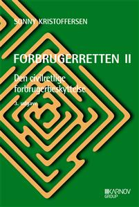

Kapitel 14 Kreditaftaler

Som studerende skal du være særlig opmærksom på følgende problemstillinger ved gennemgangen af kreditaftaler:
Underpantsforbud, KAL § 21
Ejendomsforbehold – gyldighedsreglerne, KAL § 34
Ejendomsforbeholdets betydning i forbindelse med anden
sikkerhedsstillelse og tilbehørspant i fast ejendom, TL §§ 37 og 38
Oprindelig trepartsforhold, KAL § 4, nr. 15, litra b,
samt efterfølgende trepartsforhold, reguleret af gældsbrevsloven
Kreditaftaler bliver behandlet i kap. 17 i “Erhvervsjura”
Introduktion til kreditaftaleloven
Forskellen på et banklån og et kreditkøb:
BanklånFigur 14.1: Banklån er en kreditaftale om et lån indgået mellem en bank og en kunde
Kreditkøb
Figur 14.2: Kreditkøb, to parter i et kreditkøb
Kreditaftaleloven (KAL)30 anvendes i de fleste aftaler om lån, kredit eller køb på kredit. Se kreditaftaleloven i lovsamlingen: https://jura.tepedu.dk/lovsamling.html.

Lovens anvendes både i forbrugerkøb, handelskøb og civilkøb.
Ordet ”kreditaftale” er defineret i KAL § 4, stk. 1, nr. 3:
”En aftale, hvorved en kreditgiver yder eller giver tilsagn om at yde kredit…”
Kreditaftaleloven regulere lån og kreditkøb.
En kreditaftale kan indgås via en kreditformidler.
En kreditgiver defineres nærmere i KAL § 4, nr. 2. KAL § 1, stk. 1, indeholder det civilretlige forbrugerbegreb, det indebærer, at KALs hovedområde er forbrugerkreditaftaler.
Definitionen er overensstemmende med definitionerne af forbrugeraftaler/køb i aftalelovens § 38 a, stk. 2, købeloven § 4 a, stk. 1, 1. pkt., forbrugeraftalelovens § 1, stk. 2, og rentelovens § 7, stk. 1.
Kreditretlige begreber:
En »kreditgiveren« forstås som forbrugerens modpart.
Kreditgiver er først og fremmest den (typisk juridiske person), der i forhold til forbrugeren yder kredit.
Ved aftaler om ydelse af pengelån/kredit, der skal tilbagebetales, er långiver kreditgiver.
“Amortisering” betyder en regelmæssig tilbagebetaling af et lån.
“Betalingsstedet” er normalt fordringshaverens bopæl eller forretningssted. “Pengeskyld er bringeskyld”.
Betegnelsen “fordringshaver” er den, der har noget til gode.
“Fordringshavermora” foreligger, når opfyldelse forhindres på grund af fordringshaverens forhold. Ved betalingsforpligtelser kan skyldneren i visse tilfælde blive frigjort ved deponering, jf. deponeringsloven.
“Fordringshaverskifte” betyder indtræden af ny fordringshaver i et gældsforhold. Kan normalt ske uden skyldnerens samtykke.
“Forfaldstid” er det tidspunkt, på hvilket fordringshaveren kan kræve betaling.
“Forhalingsrente” er en rente som følge af for sen betaling - i modsætning til almindelig kreditrente.
“Forældelse” ophør af en fordring på grund af dennes alder.
"forældelsesfrist" er normalt på 10 år fra fordringens stiftelse, jf. forældelseslovens § 6. En række krav forældelse dog på 3 år fra forfaldstid, jf. nærmere forældelsesloven i lovsamlingen i kapitel 26: https://jura.tepedu.dk/lovsamling.html.
“Saldokvittering” er en kvittering for betaling til fuld og endelig afgørelse af ethvert mellemværende.
En “skadesløs kvittering” er en kvittering, hvor den betalende tager forhold om tilbagesøgning, hvis det viser sig, at der betalt for meget.
“Vanhjemmel” er en retlige mangler ved det solgte, fx at dette var behæftet med pant eller ejendomsforbehold.
De finansielle institutioners udlån til forbrugere er derfor omfattet af kreditaftaleloven (pengeinstitutter, kreditinstitutter, finansieringsselskaber, realkreditinstitutter, låneforeninger, livsforsikringsselskaber (policelån), pensionskasser, erhvervsdrivende udlånsfonde osv).
Video
Kunsten at låne uden at gråne from Forbrug.dk on Vimeo.
Hvad er kreditformidling?
Figur 14.3: Kreditkøb, to parter i et kreditkøb
Kreditgiver skal være erhvervsdrivende, jf. dog KAL § 1, stk. 2, og for ikke-forbrugerkøb KAL § 2.31
Erhvervsdrivende er enhver, der driver en privat erhvervsvirksomhed, hvad enten der er tale om hoved- eller bibeskæftigelse.
Virksomheden må dog have et vist omfang og være af en vis varighed.
Er vedkommende bogføringspligtig, momspligtig m.v. vil vedkommende normalt være erhvervsdrivende i lovens forstand.
Det er uden betydning, om der tilstræbes økonomisk gevinst med virksomheden.
Offentlig virksomhed, som kan sidestilles med privat erhvervsvirksomhed, f.eks. levering af vand, transport af personer og gods, er også at betragte som erhvervsvirksomhed i lovens forstand, jf. herved princippet i markedsføringslovens § 1.
Foreninger og sammenslutninger, hvis formål udelukkende er velgørenhed eller almennyttigt, politisk eller religiøst, kan i almindelighed ikke anses for erhvervsdrivende.
Forarbejderne til kreditaftaleloven betoner, at en arbejdsgiver, som yder kredit til en medarbejder, normalt ikke kan anses som kreditgiver i lovens forstand, medmindre arbejdsgiveren yder kreditten som led i sin erhvervsmæssige virksomhed, f.eks. et pengeinstitut.
KAL gælder også for kreditaftaler, hvor kreditten ydes af en ikke-erhvervsdrivende, hvis aftalen er indgået eller formidlet for kreditgiveren af en erhvervsdrivende.
Kreditgiveren har bevisbyrden for, at der ikke foreligger en forbrugerkreditaftale, at en kreditaftale er omfattet af KAL § 2, stk. 2.
14.1 Krav til kreditaftalen
Før kreditaftalen indgås skal en forbruger have oplysninger om vilkår og omkostninger på et varigt medie (fx papir, CD-rom, netbank)
Kreditgiver skal bl.a. oplyse om ÅOP (årlige omkostninger i procent; kan betegnes for ”kiloprisen for lånet”)
Kreditaftalen skal indgås på varigt medie og opfylde tilsvarende oplysningskrav
Opfylder kreditgiver ikke oplysningspligten:
Skal forbrugeren evt. betale færre omkostninger.
Løber fortrydelsesretten først fra oplysningspligten er opfyldt.
Kreditgiver kan blive pålagt en bøde.
Kreditgiver skal vurdere forbrugerens kreditværdighed før kreditaftalen bliver indgået.
I forbindelse med optagelse af realkreditlån har forbrugeren krav på en 7 dages acceptfrist, jf. KAL § 7d.
Et kortfristet forbrugslån kræver at forbruger afventer mindst 48 timer med at acceptere tilbuddet, jf. KAL § 8c.
Forbrugeren har ret til at fortryde en kreditaftale, jf. KAL § 19
En forbruger har altid ret til at indfri lånet før tid og dermed spare yderligere renteudgifter.
Undtaget pantebreve med pant i fast ejendom.
Urimelige vilkår kan blive tilsidesat, jf. KAL § 22 eller efter aftalelovens §§ 38c, jf. 36.
14.2 Kreditgiverens oplysningspligt mv.

Kreditaftalelovens forbrugerbeskyttende sigte kommer til udtryk i lovens bestemmelser om, at forbrugeren senest i forbindelse med kreditaftalens indgåelse skal have en række oplysninger om prisen og vilkårene for kreditten.
Loven indeholder derfor en række formkrav til kreditaftaler og bestemmelser om, at manglende eller urigtig opfyldelse af oplysningspligten kan medføre såvel civilretlige som strafferetlige sanktioner, jf. KAL §§ 23 og 24 samt 56, stk. 2.
Det påhviler som nævnt domstolene – i praksis navnlig fogedretterne – ex officio (af egen drift) at iagttage, om det dokument, der fremlægges i en (foged-)sag, er omfattet af loven, og at de foreskrevne kreditoplysninger er givet på behørigt vis, jf. dommen i U 2000.461 V: https://pro.karnovgroup.dk/document/7000196125/1
Kapitel 2 i KAL regulerer 10 områder, der vedrører kreditgiverens oplysningspligt og andre forpligtelser, som det påhviler kreditgiveren at iagttage forud for og i forbindelse med indgåelse af en kreditaftale.
Disse områder er:
1. Oplysningspligt forud for aftaleindgåelsen, jf. KAL § 7 a.
2. Oplysningspligt forud for aftaleindgåelsen i forbindelse med visse særlige former for kreditaftaler, jf. KAL § 7 b.
3. Vurdering af forbrugerens kreditværdighed, jf. KAL § 7 c.
4. Krav til kreditaftalen, jf. KAL § 8.
5. Pantsikrede lån i fast ejendom, jf. KAL § 8 a.
6. Overtræk, jf. KAL § 8 b.
7. Underretning om ændring af debitorrenten, jf. KAL § 9.
8. Kontoudtog og underretning om ændringer i debitorrenten ved kassekreditter, jf. KAL § 10.
9. Beregning af de årlige omkostninger i procent, jf. KAL § 16 og endelig,
10. En særlig bestemmelse om kreditformidlere i KAL § 17.
Bestemmelserne i KAL §§ 7 a, 7 b og 7 c vedrører oplysninger, der skal gives i god tid før der indgås en kreditaftale, og bestemmelsen i KAL § 7 c vedrører den pligt, der påhviler kreditgivere til at foretage en kreditvurdering af forbrugeren, før der indgås en kreditaftale.
Bestemmelsen i KAL § 8 vedrører formkrav til en kreditaftale og oplysninger, der skal gives i selve kreditaftalen.
De øvrige oven for nævnte bestemmelser vedrører oplysninger, der skal gives efterfølgende samt bestemmelser om beregning af de årlige omkostninger i procent og om kreditformidlere.
14.2.1 Oplysningspligt forud for aftaleindgåelsen
Før en forbruger bindes af en kreditaftale eller et kredittilbud, skal kreditgiveren – eller kreditformidleren, hvis aftalen formidles af denne – i god tid give forbrugeren de oplysninger, der er nødvendige for, at denne kan sammenligne forskellige tilbud, således at forbrugerens beslutning om at indgå en kreditaftale kan træffes på et informeret grundlag, jf. KAL § 7 a, stk. 1.
Oplysningerne skal gives dels på grundlag af de kreditvilkår og betingelser, som kreditgiveren tilbyder, dels på grundlag af de præferencer og oplysninger, som forbrugeren måtte have fremført.
Oplysningerne skal gives i så god tid, før en eventuel aftale indgås, at forbrugeren har tid til at sætte sig ind i de udleverede oplysninger.
Hvis en kreditgiver ikke ønsker at indgå en aftale, er kreditgiveren ikke pligtig at udlevere kreditoplysninger.
Oplysningerne gives på papir eller på et andet varigt medium ved hjælp af formularen i lovens bilag 2.
Det er kreditgiveren, der må tåle de civilretlige sanktioner, jf. KAL § 34 og § 24, der kan bringes i anvendelse, hvor formidleren ikke retmæssigt har opfyldt sin oplysningspligt.
Kreditgiveren ofte vil have et regreskrav mod den formidler, som ikke har opfyldt sin oplysningspligt over for forbrugeren.

De oplysninger, som kreditgiveren skal give forud for indgåelse af en aftale, er ifølge KAL § 7 a, stk. 2 følgende:
1. Kredittypen. (fx lån eller en kassekreditaftale)
2. Navn og fysisk adresse på kreditgiveren og i givet fald navn og fysisk adresse på den involverede kreditformidler, jf. definitionen i KAL § 4, nr. 6.
3. Det samlede kreditbeløb og betingelserne for at udnytte kreditmuligheden, jf. lovens § 4, nr. 12 om definitionen af det samlede kreditbeløb. Det lånebeløb som forbrugeren kan råde over (låneprovenuet).
4. Kreditaftalens løbetid. Løbetiden er den periode, over hvilken et lån afvikles
5. Ved kredit i form af henstand med betalingen for en specifik vare eller tjenesteydelse og tilknyttede kreditaftaler, varen eller tjenesteydelsen og kontantprisen herfor.
6. Debitorrenten, betingelserne for anvendelsen af debitorrenten og et eventuelt indeks eller en eventuel referencesats, der skal anvendes på den oprindelige debitorrente, og tidspunkter, betingelser og procedurer for ændring af debitorrenten.
Hvis der anvendes forskellige debitorrenter under forskellige omstændigheder, angives de nævnte oplysninger for alle de relevante debitorrenter.
7. De årlige omkostninger i procent og det samlede beløb, som skal betales af forbrugeren, illustreret ved et repræsentativt eksempel, som angiver alle de antagelser, der er lagt til grund for at beregne procentsatsen.
Hvis forbrugeren har informeret kreditgiveren om et eller flere elementer i den kredit, vedkommende foretrækker, som f.eks. kreditaftalens løbetid og det samlede kreditbeløb, skal kreditgiveren tage hensyn til disse elementer.
Hvis en kreditaftale giver forskellige muligheder for at udnytte kreditmuligheden med forskellige omkostninger eller debitorrenter, og kreditgiveren derfor anvender det loft for kreditten, som fremgår af antagelsen i lovens bilag 1, skal kreditgiveren angive, at andre muligheder for at udnytte kreditmuligheden for denne type kreditaftale kan medføre højere årlige omkostninger i procent.
8. Størrelse, antal og hyppighed af de betalinger, der skal foretages af forbrugeren, og i givet fald den rækkefølge, hvori betalingerne henføres til forskellige udestående saldi til forskellige debitorrenter med henblik på tilbagebetaling.
9. Hvor det er relevant, omkostningerne i forbindelse med forvaltning af en eller flere konti til registrering af både betalingstransaktioner og udnyttelser af kreditmuligheden, medmindre det ikke er obligatorisk at åbne en konto, tillige med omkostningerne ved anvendelse af et betalingsmiddel i forbindelse med både betalingstransaktioner og udnyttelser af kreditmuligheden, andre omkostninger i forbindelse med kreditaftalen og betingelserne for en eventuel ændring af disse omkostninger.
10. Hvor det er relevant, om der er omkostninger, som forbrugeren skal betale til en notar ved indgåelsen af kreditaftalen.
11. Den eventuelle forpligtelse til at indgå en aftale om en accessorisk tjenesteydelse i forbindelse med kreditaftalen, navnlig en forsikringspolice, såfremt indgåelsen af en aftale om en sådan accessorisk tjenesteydelse er obligatorisk for at opnå kreditten eller for at opnå kreditten på de annoncerede vilkår og betingelser.
12. Den gældende sats for morarenter og måden, denne sats tilpasses på, og, hvor det er relevant, eventuelle omkostninger i forbindelse med misligholdelse.
13. Oplysning om følgerne af manglende betalinger.
14. Hvor det er relevant, den sikkerhedsstillelse, som kræves.
15. Hvorvidt en fortrydelsesret finder anvendelse eller ej.
16. Retten til førtidig tilbagebetaling og, hvor det er relevant, oplysninger om kreditgiverens ret til kompensation og om, hvordan denne kompensation fastsættes i overensstemmelse med KAL § 26.
17. Forbrugerens ret til omgående underretning uden omkostninger i henhold til KAL § 7 c, stk. 3, om resultatet af databasesøgninger, der er foretaget med henblik på vurdering af den pågældendes kreditværdighed.
18. Forbrugerens ret til efter anmodning og uden omkostninger at få udleveret en kopi af udkastet til kreditaftale, finder ikke anvendelse, hvis kreditgiveren på tidspunktet for anmodningen ikke er villig til at indgå kreditaftalen med forbrugeren.
19. Hvis det er relevant, hvor længe oplysningerne, der er afgivet forud for aftaleindgåelsen, er bindende for kreditgiveren.
14.2.2 Vurdering af forbrugerens kreditværdighed
Før en kreditgiver indgår en kreditaftale med en forbruger, skal kreditgiveren ifølge KAL § 7 c foretage en vurdering af forbrugerens kreditværdighed.
Vurderingen skal ske på grundlag af fyldestgørende oplysninger, der, hvor det er relevant, indhentes hos forbrugeren og, hvor det er nødvendigt, ved søgning i relevante databaser; det vil i praksis sige hos et kreditoplysningsbureau.
Kreditvurderingspligten har til formål at beskytte forbrugeren og skal som følge heraf foretages med sigte på at vurdere, om forbrugeren på baggrund af dennes økonomiske situation ved hjælp af fx løbende indtægter, låneomlægning eller realisation af aktiver vil være i stand til at betale de forudsatte ydelser på kreditten – og altså ikke med henblik på at vurdere kreditgiverens risiko for tab.
14.2.3 Kravene til selve kreditaftalen

De ovenfor omtalte bestemmelser i KAL §§ 7 a, 7 b og 7 c vedrører som tidligere anført oplysninger, der skal gives, og kreditvurderinger, der skal foretages, før der indgås en kreditaftale.
Bestemmelsen i lovens § 8 regulerer de formkrav og de oplysninger, som skal fremgå af selve kreditaftalen.
Formkrav
En kreditaftale skal ifølge KAL § 8, stk. 1, udfærdiges på papir eller på et andet varigt medium. Endvidere er det et krav, at alle aftalens parter skal have et eksemplar af aftalen.

Ifølge KAL § 8, stk. 2, skal en kreditaftale indeholde oplysning om:
1. Kredittypen.
2. Navn og fysisk adresse på aftaleparterne og i givet fald på den involverede kreditformidler.
3. Kreditaftalens løbetid.
4. Det samlede kreditbeløb og betingelserne for at udnytte kreditmuligheden.
5. Den erhvervede vare eller tjenesteydelse og kontantprisen herfor, såfremt der er tale om en kredit i form af henstand med betalingen for en specifik vare eller tjenesteydelse eller om tilknyttede kreditaftaler.
6. Debitorrenten, betingelserne for anvendelsen af debitorrenten og et eventuelt indeks eller en eventuel referencesats, der skal anvendes på den oprindelige debitorrente, samt tidspunkter, betingelser og procedurer for ændring af debitorrenten.
Hvis der anvendes forskellige debitorrenter under forskellige omstændigheder, angives de nævnte oplysninger med hensyn til alle de relevante debitorrenter.
7. De årlige omkostninger i procent og det samlede beløb, som skal betales af forbrugeren, beregnet på tidspunktet for indgåelse af kreditaftalen.
Alle de antagelser, der er lagt til grund ved beregningen af denne procentsats, angives.
8. Størrelse, antal og hyppighed af de betalinger, der skal foretages af forbrugeren, og i givet fald den rækkefølge, hvori betalingerne henføres til forskellige udestående saldi til forskellige debitorrenter med henblik på tilbagebetaling.
9. Forbrugerens ret til på anmodning, til enhver tid i løbet af kreditaftalens varighed uden omkostninger, at modtage en opgørelse i form af en amortiseringsplan, såfremt der er tale om amortisation af kapitalen i forbindelse med en kreditaftale med fast løbetid.
Amortiseringsplanen skal angive skyldige betalinger, tidspunkter og betingelser for betaling af sådanne beløb.
Desuden skal den indeholde en specificering af den enkelte tilbagebetaling, som viser amortiseringen af kapitalen, renterne beregnet på grundlag af debitorrenten og, hvor det er relevant, eventuelle yderligere omkostninger.
Hvis rentesatsen ikke er fast eller de yderligere omkostninger kan ændres i kreditaftalens løbetid, skal amortiseringsplanen klart og tydeligt angive, at oplysningerne i planen kun er gyldige indtil næste ændring af debitorrenten eller af de yderligere omkostninger i henhold til kreditaftalen.
10. En opgørelse over tidspunkter og betingelser for betaling af renter og eventuelle dermed forbundne faste omkostninger og engangsomkostninger, såfremt der skal betales omkostninger og renter uden amortisation af hovedstolen.
11. Omkostningerne i forbindelse med forvaltning af en eller flere konti til registrering af både betalingstransaktioner og udnyttelser af kreditmuligheden, medmindre det ikke er obligatorisk at åbne en konto, tillige med omkostningerne ved anvendelse af et betalingsmiddel i forbindelse med både betalingstransaktioner og udnyttelser af kreditmuligheden, andre omkostninger i forbindelse med kreditaftalen og betingelserne for en eventuel ændring af disse omkostninger, hvor det er relevant.
12. Den gældende sats for morarenter som er fastsat på tidspunktet for indgåelse af aftalen og måden, hvorpå denne sats tilpasses, og, hvor det er relevant, andre omkostninger i forbindelse med misligholdelse.
13. Oplysning om følgerne af manglende betalinger.
14. Hvor det er relevant, at der skal betales notarialgebyrer.
15. Den sikkerhedsstillelse og de forsikringer, som eventuelt kræves.
16. En eventuel fortrydelsesret og fristen for udøvelse af en sådan fortrydelsesret samt andre betingelser for udøvelsen, herunder oplysninger om forbrugerens forpligtelse til at tilbagebetale den udnyttede kapital med renter i overensstemmelse med § 19, stk. 4, og det rentebeløb, der påløber pr. dag.
17. Oplysninger om forbrugerens rettigheder i medfør af § 20 og betingelserne for udøvelse af disse.
18. Retten til førtidig tilbagebetaling, proceduren for førtidig tilbagebetaling og, hvor det er relevant, oplysninger om kreditgiverens ret til kompensation og den måde, hvorpå denne kompensation fastsættes.
19. Proceduren for udøvelse af retten til at opsige kreditaftalen.
20. Hvorvidt der er klageadgang og adgang til udenretslig bilæggelse af tvister for forbrugeren, og, hvis dette er tilfældet, hvorledes forbrugeren kan gøre brug deraf.
21. Hvor det er relevant, andre aftalevilkår og -betingelser.
22. Navn og adresse på den kompetente tilsynsmyndighed.
Særligt om kassekreditter

En kassekredit er et lån i et pengeinstitut, der gør det muligt at have et ekstra rådighedsbeløb, selvom kontoen skulle være tom.
Video: Hvad er en kassekredit
Kassekreditaftaler skal ifølge KAL § 8, stk. 5, indeholde en klar og tydelig angivelse af:
1. Kredittypen.
2. Navn og fysisk adresse på aftaleparterne og i givet fald på den involverede kreditformidler.
3. Kreditaftalens løbetid.
4. Det samlede kreditbeløb og betingelserne for at udnytte kreditmuligheden.
5. Debitorrenten, betingelserne for anvendelsen af debitorrenten og et eventuelt indeks eller en eventuel referencesats, der skal anvendes på den oprindelige debitorrente, samt tidspunkter, betingelser og procedurer for ændring af debitorrenten.
Hvis der anvendes forskellige debitorrenter under forskellige omstændigheder, angives de nævnte oplysninger med hensyn til alle de relevante debitorrenter.
6. De årlige omkostninger i procent og de samlede omkostninger, som skal betales af forbrugeren, beregnet på tidspunktet for indgåelse af kreditaftalen.
Alle de antagelser, der er lagt til grund ved beregningen af denne procentsats, jf. § 16, stk. 3 og 4, og § 4, nr. 7 og 9, angives.
7. En angivelse af, at forbrugeren til enhver tid kan blive anmodet om at betale hele kreditbeløbet tilbage.
8.Oplysninger om de omkostninger, der påløber fra sådanne kreditaftalers indgåelse, og, når det er relevant, om betingelserne for ændring af de pågældende omkostninger.
9. Proceduren for udøvelse af retten til at opsige kreditaftalen.

Oplysning om variabel rente og andre variable kreditomkostninger
Kreditaftaleloven indeholder ikke begrænsninger af godkendte pengeinstitutters, realkreditinstitutters eller andre godkendte kreditinstitutters ret til at variere den rente og de andre omkostninger, som en forbruger skal betale for en given kredit.
Derimod er der fastsat regler, som fastlægger andre kreditgiveres ret til at foretage ændringer i den rente og de eventuelle andre omkostninger, som en forbruger skal betale for en given kredit.
Ifølge KAL § 8, stk. 6, kan der i en kreditaftale kun aftales, at renten helt eller delvist skal variere med størrelsen af Nationalbankens diskonto eller lignende forhold, som kreditgiveren er uden indflydelse på.
Den samme begrænsning gælder ifølge KAL § 8, stk. 7, for andre kreditomkostninger end renten.
Særligt om pantsikrede lån i fast ejendom
I KAL § 8 a, stk. 1, er det bestemt, at ved kreditaftaler, der sikres ved pant i fast ejendom, skal de oplysninger, der er nævnt i § 8, og aftalens øvrige væsentlige vilkår gives forud for kreditaftalens indgåelse, jf. KAL § 7 a.
For så vidt angår sælgerpantebreve er det ved KAL § 8 a, stk. 2, bestemt, at hvis en sælger af en fast ejendom yder kredit mod udstedelse af (sælger-)pantebrev i den faste ejendom, skal de oplysninger, der er nævnt i stk. 1, gives i aftalen om ejendommens overdragelse; almindeligvis købsaftalen.
Video: Forstå et sælgerpantebrev på 2 minutter
Et sælgerpantebrev kan være svaret from SEGES on Vimeo.
Denne aftale skal endvidere indeholde oplysning om, hvilket beløb der skal betales, hvis forbrugeren kan betale kontant hos sælgeren, alias kreditgiveren, i stedet for at udstede pantebrev.
Som følge af at en aftale om ejendommens overdragelse, en købsaftale, jævnligt er af foreløbig karakter, er det ved KAL § 8 a, stk. 3, bestemt, at hvis de oplysninger, der er givet efter stk. 1 eller 2, er af foreløbig karakter, skal kreditgiveren snarest muligt sende meddelelse om de endelige kreditoplysninger til forbrugeren.
Som en ordensforskrift er det ved KAL § 8 a, stk. 4, bestemt, at KAL § 8 finder tilsvarende anvendelse på kreditaftaler efter stk. 1 og 2.
Særligt om overtræk
Hvor en kreditgiver og en forbruger har indgået aftale om oprettelse af en løbende konto, hvor det eventuelt vil kunne tillades forbrugeren at overtrække kontoen, skal aftalen ifølge KAL § 8 b, stk. 1, indeholde de oplysninger, der er omhandlet i KAL § 7 b, stk. 2, nr. 5.
Det vil sige debitorrenten, betingelserne for anvendelsen af debitorrenten og et eventuelt indeks eller en eventuel referencesats, der skal anvendes på den oprindelige debitorrente, de omkostninger, der anvendes fra det tidspunkt, hvor kreditaftalen indgås, og i givet fald betingelserne for ændring af disse omkostninger.
En sådan kreditaftale kan være en kassekredit, men kan også være en anden konto, fx en løn- eller budgetkonto med overtræksret.
Oplysningerne skal gives regelmæssigt på papir eller på et andet varigt medium.
Hvor der er tale om et væsentligt overtræk (konkret vurdering) i en periode på over 1 kalendermåned skal kreditgiveren ifølge KAL § 8 b, stk. 2, straks på papir eller på et andet varigt medium underrette forbrugeren om følgende:
Overtrækket, det involverede beløb, debitorrenten og en eventuel bod og eventuelle omkostninger eller morarenter.
Underretning om ændring af debitorrenten
Ifølge KAL § 9, stk. 1, skal kreditgiveren underrette forbrugeren om enhver ændring i debitorrenten.
Underretningen skal ske på papir eller på et andet varigt medium. Underretningen skal ifølge KAL § 9, stk. 2, indeholde oplysning om betalingernes størrelse, efter at den nye debitorrente er trådt i kraft.
Hvis betalingernes antal eller hyppighed ændres, skal underretningen tillige indeholde oplysning herom.
Underretningen skal ifølge stk. 1 som hovedregel gives, før ændringerne træder i kraft.
Dog kan kreditgiveren og forbrugeren i kreditaftalen have fastsat en bestemmelse om, at oplysninger efter KAL § 9, stk. 1 og 2, gives til forbrugeren med jævne mellemrum i de tilfælde, hvor:
1) ændringen i debitorrenten skyldes en ændring i en referencesats (fx Nationalbankens diskonto eller udlånsrente),
2) hvor den nye referencesats er gjort tilgængelig for offentligheden på passende vis, og
3) hvor oplysninger om den nye referencesats også er tilgængelige hos kreditgiveren.
For så vidt angår refinansiering af variabelt forrentede lån med pant i fast ejendom, der ydes på baggrund af obligationsudstedelse, kan underretning om en ændring i debitorrenten efter stk. 1 og 2 ifølge KAL § 9, stk. 4, ske, efter at ændringen er trådt i kraft.
Kontoudtog og underretning om ændringer i debitorrenten ved kassekreditter
Bestemmelsen i KAL § 10 regulerer kreditgiverens pligt til at udsende kontoudtog og underrette forbrugeren om ændringer i debitorrenten, når kreditaftalen er en kassekredit.
Ifølge KAL § 10, stk. 1, skal kreditgiveren jævnligt orientere forbrugeren ved at sende forbrugeren et kontoudtog på papir eller på et andet varigt medium.
Denne forpligtelse kan ikke opfyldes ved, at forbrugeren eksempelvis via adgang til netbank selv kan generere et kontoudtog, hvorimod et automatisk genereret kontoudtog, der er tilgængeligt via forbrugerens netbank, anses for at være i overensstemmelse med underretningspligten ifølge stk. 1, hvis det indeholder de foreskrevne oplysninger.
Ifølge KAL § 10, stk. 2, skal et kontoudtog indeholde oplysninger om:

1. Den nøjagtige periode, som kontoudtoget dækker.
2. Størrelsen på de udnyttede kreditmuligheder og datoerne for udnyttelserne.
3. Saldoen på det foregående kontoudtog og dettes dato.
4. Den nye saldo.
5. Datoerne for betalinger og betalingernes størrelse.
6. Den anvendte debitorrente.
7. Eventuelle omkostninger, der er pålagt.
8. Det eventuelle minimumsbeløb, der skal betales.
Ifølge KAL § 10, stk. 3, skal kreditgiveren endvidere underrette forbrugeren om enhver stigning i debitorrenten eller andre omkostninger, inden den pågældende ændring træder i kraft.
Også denne underretning skal ske på papir eller andet varigt medium.
Dog kan det ifølge KAL § 10, stk. 4, fastsættes i en kreditaftale, at underretning om ændring i debitorrenten gives på kontoudtog efter stk. 1 i de tilfælde, hvor ændringen i debitorrenten skyldes en ændring i en referencesats, hvor den nye referencesats er gjort tilgængelig for offentligheden, og hvor oplysning om den nye referencesats tillige er tilgængelig hos kreditgiveren.
Beregning af de årlige omkostninger i procent


Ved de årlige omkostninger i procent (også betegnet som ÅOP) forstås ifølge KAL § 16, stk. 1, en procentsats, der på årsbasis svarer til nutidsværdien af alle fremtidige eller eksisterende forpligtelser i form af udnyttede kreditmuligheder, tilbagebetalinger og omkostninger, der er aftalt mellem kreditgiveren og forbrugeren.
Sagt med andre ord betyder ÅOP, hvor meget det samlet koster at låne 100 kr. i ét år. “kiloprisen for lånet”
De årlige omkostninger i procent beregnes ud fra den matematiske formel, som er i kreditaftalelovens bilag 1.
Grundligningen, som bestemmer de årlige omkostninger i procent (ÅOP), sætter på årsbasis lighedstegn mellem den samlede nutidsværdi af udnyttede kreditmuligheder og den samlede nutidsværdi af tilbagebetalinger og betalinger af omkostninger:

Kreditformidlere
I visse tilfælde skal en forbruger betale et gebyr til en kreditformidler for den (tjeneste-)ydelse, som formidleren har præsteret i forbindelse med indgåelse af en kreditaftale.
14.2.4 Kreditgiverens tilsidesættelse af oplysningspligten

Hvilke konsekvenser har det, hvis kreditgiveren tilsidesætter sine oplysningsforpligtelser:
Manglende opfyldelse af visse oplysningsforpligtelser, er civilretligt sanktioneret i KAL § 23, såfremt der ikke er givet behørig oplysning om ÅOP og de samlede omkostninger, som forbrugeren skal betale, jf. KAL § 8, stk. 2, nr. 7, eller stk. 5, nr. 6, jf. KAL § 23, stk. 1, jf. dog § 23, stk. 3, at forbrugeren ikke kan afkræves andre kreditomkostninger end en årlig rente svarende til den officielle udlånsrente med et tillæg på 5 %, se fx Juridisk Årbog 1999, s. 188 (møbler på kredit).
KAL § 23, stk. 1, medfører således ikke blot en reduktion af den aftalte rente til en rente, der svarer til den officielle udlånsrente med et tillæg på p.t. 5 %.
Bestemmelsen medfører tillige, at kreditgiveren selv må afholde samtlige omkostninger, fx kurstab, provisioner, tinglysningsafgift og alle andre stiftelsesomkostninger, som har været forbundet med at stifte kreditten, da forbrugeren kun er pligtig at betale lånebeløbet.
Sanktionsreglen i KAL § 23, stk. 1, gælder ikke, hvis kreditgiveren kan godtgøre, at forbrugeren på trods af de manglende eller urigtige oplysninger har haft et forsvarligt grundlag for at bedømme kreditomkostningerne, jf. KAL § 23, stk. 3.
I betragtning af den høje detaljeringsgrad, der er i lovens bestemmelser om kreditgiverens oplysningspligt, kan det ikke antages, at bestemmelsen i KAL § 23, stk. 3, har væsentlig betydning.
Det er desuden hensigten med bestemmelsen, at denne skal have et snævert anvendelsesområde, således at den altovervejende hovedregel er, at en tilsidesættelse af oplysningspligten fører til, at der skal ske en regulering, jf. nærmere præmisserne i dommen U 2004.317 H om aftale om leje af videoapparat med ret til at købe for 1 kr. efter 5 år. Dette var i strid med kreditaftaleloven: https://pro.karnovgroup.dk/document/7000279473/1
Undtagelser i kreditaftaleloven skal således fortolkes indskrænkende grundet lovens forbrugerbeskyttende hensigt.
Den reduktion af det samlede beløb, som en forbruger skal betale, såfremt sanktionsreglerne i KAL § 23, stk. 1 og 2, finder anvendelse, sker ved en reduktion af den sidste eller om fornødent i de sidste ydelser, som forbrugeren skal betale, jf. § 23, stk. 4, og ikke ved en reduktion af størrelsen af de fremtidige ydelser.
Såfremt forbrugeren har betalt mere end det, denne er pligtig at betale ifølge en korrektion af kreditaftalen, jf. lovens § 23, stk. 1 har forbrugeren som hovedregel krav på tilbagebetaling af det for meget betalte.
Forbrugerens retsstilling fastsættes i sådanne tilfælde efter dansk rets almindelige regler om condictio indebiti (tilbagesøgning).
“condictio indebiti” betyder tilbagesøgning af beløb, som er erlagt i en urigtig formening om skyld.
Har sælgeren i et kreditkøb ikke givet oplysninger som foreskrevet i KAL § 8, kan kreditgiveren i almindelighed ikke kræve godtgørelse for omkostninger, som ellers ville påløbe i anledning af forbrugerens misligholdelse, jf. KAL § 24.
Bøder for overtrædelse af kreditaftaleloven:
Grove eller gentagne overtrædelser af KAL §§ 7 a, 7 b, 8, 8 a, 8 b, 9, 10 eller 17 straffes med bøde, jf. KAL § 56, stk. 2.
14.2.5 Urimelige vilkår, som kan tilsidesættes
Det følger af KAL § 22:
“Er det beløb, som forbrugeren efter aftalen skal betale som vederlag eller omkostninger, urimeligt, skal det nedsættes til, hvad der skønnes rimeligt. Medmindre andet bestemmes af retten, sker afkortningen i det eller de sidste beløb, der skal betales efter aftalen. Er der afkrævet forbrugeren et urimeligt vederlag for at give den pågældende henstand eller andre lempelser i de aftalte vilkår, sker afkortningen på samme måde”.
Reduktion af en rentesats rejser ligesom andre rettelser af en kontrakt spørgsmålet om, hvor vidtgående rettelsen bør være.

Dommen i U 1960.631 H tyder på, men fastslår dog ikke udtrykkeligt, at rentefoden er blevet nedsat til en høj sats, måske den højeste sats som ikke kunne være tilsidesat, men ikke til den lavere sats, som er almindelig eller gennemsnitlig praksis på markedet: https://pro.karnovgroup.dk/document/7000214859/1
14.3 Trepartsforhold
Lånesituationer med tre parter:
1. Oprindeligt trepartsforhold
2. Efterfølgende trepartsforhold
3. Fritstående lån
Vigtigt at skelne mellem de tre situationer for at afgøre, hvilke regler, der finder anvendelse
Trepartsforhold: Oprindeligt trepartsforhold:
Forbrugeren opnår lån hos en tredjemand gennem en kreditformidler, jf. KAL § 4, stk. 1, nr. 15 litra b
Typisk situation: Forbruger køber en vare i en butik og indgår i butikken en låneaftale med en kreditgiver
Hvis varen er mangelfuld kan forbrugeren gøre krav gældende overfor finansieringsselskabet (køberetlig identifikation mellem finansieren og sælgeren)
Kreditgiver kan få ejendomsforbehold i det solgte men ikke pant
Trepartsforhold: Efterfølgende trepartsforhold:
Forbrugeren indgår kreditaftale med sælger, jf. KAL § 4, stk. 1, nr. 15 litra a. Sælger overdrager efterfølgende aftalen til en tredjemand
Typisk situation: Forbruger køber en vare i en butik og indgår en afdragsordning med butikken. Butikken sælger kravet på forbrugeren videre til et finansieringsselskab
Hvis varen er mangelfuld kan forbrugeren gøre samme krav gældende overfor finansieringsselskabet som overfor sælger
Kreditgiver kan få ejendomsforbehold i det solgte men ikke pant
Trepartsforhold og fritstående lån
Ikke et trepartsforhold fordi sælger ikke har kontakt med långiver
Forbrugeren opnår lån hos en långiver. Låneprovenuet bliver brug til et kontantkøb
Typisk situation: Forbruger optager lån i sin bank.

Lånet bliver brugt til køb af fx bil.
Bilsælger kender ikke til finansieringen
Hvis varen er mangelfuld kan forbrugeren ikke gøre krav gældende overfor banken – lånet skal tilbagebetales
Det er ikke et kreditkøb og banken kan få pant i bilen
Kreditaftaleloven indeholder en række bestemmelser, som skal beskytte forbrugerne i såvel oprindelige som efterfølgende trepartsforhold.
14.3.1 Oprindeligt trepartsforhold
Figur 14.4: Oprindeligt trepartsforhold
I det oprindelige trepartsforhold er der fra starten tre aftaleparter involveret, idet forbrugeren dels indgår aftale med en sælger eller tjenesteyder om køb eller om præstation af en tjenesteydelse, dels indgår aftale med långiver (finansieren) om ydelse af lån til betaling af vederlaget.
Der foreligger dog kun et oprindeligt trepartsforhold, hvis der tillige foreligger en aftalerelation mellem finansieren og sælgeren eller tjenesteyderen, således at kreditten ydes på grundlag heraf, jf. KAL § 4, nr. 15, litra b, jf. KAL § 33, stk. 4, for så vidt angår tjenesteydelser.
Som eksempel på oprindelige trepartsforhold kan nævnes de eksterne kontosystemer, hvor en særlig kontoorganisation – kontoring eller lignende – ved aftale med en række handlende mv. har forpligtet sig til gennem ydelse af kredit at finansiere de aftaler, som kunder, der er tilsluttet organisationen, og som typisk er udstyret med et særligt kontokort, foretager hos de pågældende handlende mv.

Endvidere kan nævnes de såkaldte lånekøb, hvor købesummen helt eller delvis tilvejebringes ved lån til forbrugeren fra tredjemand, fx et finansieringsselskab, med hvem sælgeren har truffet aftale om finansiering af købet.
En sådan aftale kan også foreligge stiltiende, fx ved at der har udviklet sig et fast samarbejde mellem sælgeren og finansieringsselskabet.
Fogedretten har statueret oprindeligt trepartsforhold, selv om skyldner havde haft forudgående kontakt til finansieringsselskabet.
14.3.2 Efterfølgende trepartsforhold
Figur 14.5: Efterfølgende trepartsforhold
Begrebet efterfølgende trepartsforhold omfatter de tilfælde, hvor den oprindelige kreditgivers rettigheder i henhold til kreditaftalen tiltransporteres til en tredjemand.
Begrebet er en kreditaftaleretlig term, der dækker over begreber som factoring, kontraktbelåning, kontraktsdiscontering o.lign.
Begrebets materielle indhold er reguleret ved reglerne om personskifte i skyldforhold, herunder navnlig reglerne om kreditorskifte.
Mens det oprindelige trepartsforhold er kendetegnet ved, at tredjemanden finansierer forbrugeren, er det efterfølgende trepartsforhold kendetegnet ved, at tredjemanden finansierer sælgeren.
Forholdet mellem forbrugeren i et kreditkøb og tredjemanden i det efterfølgende trepartsforhold reguleres dels ved de almindelige regler om kreditorskifte i skyldforhold, dels ved kreditaftalelovens §§ 31-33.
Forholdet mellem sælgeren/kreditgiveren i det oprindelige trepartsforhold og tredjemanden i det efterfølgende trepartsforhold er navnlig, men ikke kun, reguleret ved gældsbrevslovens §§ 9 og 10 og ved gældsbrevslovens §§ 29-31 samt den righoldige retspraksis, der foreligger vedrørende factoring, fakturabelåning og selskabsopsplitning mv.
14.3.3 Fritstående lån i forhold til det oprindelige trepartsforhold
Figur 14.6: Fritstående lån, køber finansierer købet med lån i banken
Såfremt et køb eller en tjenesteydelse finansieres ved, at forbrugeren opnår et lån hos kreditgiver, som ikke har nogen forbindelse til sælgeren eller tjenesteyderen, foreligger der ikke et oprindeligt trepartsforhold, men derimod et såkaldt fritstående lån.
En sådan kreditaftale omfattes nok af kreditaftalelovens generelle bestemmelser om oplysningspligt, forbrugerens betalinger, efterfølgende trepartsforhold, mv., hvorimod lovens bestemmelser vedrørende oprindeligt trepartsforhold og kreditkøb ikke finder anvendelse.
Finansieres et køb eller tjenesteydelse ved et fritstående lån, har kreditaftaleloven således ingen betydning for retsforholdet mellem forbrugeren og sælgeren eller tjenesteyderen.
Når det skal afgøres, om der foreligger et fritstående lån eller et kreditkøb (oprindeligt trepartsforhold), som er omfattet af KAL § 4, nr. 15, litra b, er det efter lovforarbejderne afgørende, om der foreligger en sådan grad af forbindelse – et sådant samvirke mellem køb og lån – mellem sælger og långiver, at forholdet med rimelighed bør anses for et kreditkøb med de i loven angivne konsekvenser, mens lovteksten i KAL § 4, nr. 15, litra b kræver en aftale om finansiering mellem sælger og tredjemand.
Der skal ikke efter retspraksis meget til før at en sådan aftale foreligger mellem sælgeren og tredjemand, hør om U 1995.192/2 H (Vandsengedommen): Køb af vandseng omfattet af kreditkøbslovens § 1, stk. 2, nr. 2 (nu kreditaftalelovens § 5, nr. 2): “I forbindelse med at K for ca. 10.000 kr. købte en vandseng i forretningen S, optog han hos finansieringsselskabet F et lån, hvis provenu blev anvendt til betaling af købesummen. Lånet kom i stand ved, at K i forretningen udfyldte en af S udleveret låneansøgning, som herefter af S pr. telefax blev indsendt til F, hvorefter denne pr. telefax bevilgede lånet, medens K fortsat opholdt sig i forretningen. K hævede senere købet af vandsengen på grund af væsentlige mangler og fremsatte over for F krav om tilbagebetaling af de betalte ydelser på lånet, i alt ca. 9.000 kr., med henvisning til kreditkøbslovens § 1, stk. 2, nr. 2, jf. § 12, stk. 1 (nu kreditaftalelovens § 5, nr. 2, jf. § 33, stk. 1 og 2). K fik medhold ved Forbrugerklagenævnet, men F sagsøgte K med påstand om, at han skulle betale de resterende låneydelser, i alt ca. 3.400 kr., og anerkende ikke at have krav på tilbagebetaling af det allerede erlagte. Ved at udlevere brochurer med låneansøgningsskemaer til S havde F over for S tilkendegivet at være villig til på sine sædvanlige betingelser og vilkår at yde lån til forretningens kunder til finansiering af disses køb i forretningen. Selv om F havde forbeholdt sig ret til at afslå låneansøgninger på grundlag af en kreditvurdering foretaget efter kriterier fastsat af F selv, måtte denne tilkendegivelse anses for at være et løfte, som F ikke vilkårligt kunne undlade at opfylde. Der fandtes herefter at foreligge en aftale mellem F og S som omhandlet i kreditkøbslovens § 1, stk. 2, nr. 2. Under de omstændigheder, hvorunder lånetilbudet var blevet indhentet, måtte lånet til K anses for indrømmet på grundlag af denne aftale, og der forelå således et køb på kredit i henhold til den nævnte bestemmelse. K kunne herefter påberåbe sig lovens § 12, stk. 1, og hans påstande om tilbagebetaling af de erlagte låneydelser og fritagelse for betaling af de resterende blev derfor taget til følge”: https://pro.karnovgroup.dk/document/7000201462/1
Selv om dommen U 1995.192/2 H er udtryk for, at KAL § 4, nr. 15, litra b, har et bredt anvendelsesområde, medfører bestemmelsen ikke, at alle lån, der anvendes til løsørekøb, må anses for omfattet af KAL § 4, nr. 15, litra b.
Lånetilsagn, der gives af et pengeinstitut/finansieringsselskab, inden den kommende køber henvender sig til sælgeren, er eksempelvis ikke omfattet, medmindre lånetilsagnet er opnået i en institution, der har en aftale med vedkommende forhandler, og køber opnår lånet på grundlag af denne aftale.
Det kan heller ikke antages, at sælgers medvirken – eksempelvis at han hjælper køberen med en telefonisk henvendelse til banken – i sig selv bevirker, at lånet er omfattet af KAL § 4, nr. 15, litra b.
Internationale betalingskort omfattet af det oprindelige trepartsforhold


Lån, der ydes af eksterne kontosystemer (og selskabskonstruktioner, der må ligestilles hermed) må antages at være omfattet af KAL § 4, nr. 15, litra b«.
Konkurrence- og Forbrugerstyrelsen antager på baggrund af de enkelte internationale kortsystemer, at i hvert fald systemerne MasterCard, Eurocard, samt Diners Club-kortet er omfattet af reglerne om oprindelige trepartsforhold.
For så vidt angår VISA vil afgørelsen af dette spørgsmål bero på, hvorvidt der sker en sådan forsinkelse af debiteringen efter anvendelse af kortet, at der må siges at blive ydet kredit fra kortudsteders side.
Dette resultat er i overensstemmelse med kreditkøbsudvalgets intentioner om, at de forbrugerbeskyttende regler i loven skal omfatte hele kreditkøbsområdet, og ud fra en mere overordnet betragtning synes ulemperne for kortudsteder at være overskuelige.
Først og fremmest vil risikoen for, at der statueres oprindeligt trepartsforhold, virke som et incitament for kortudsteder til at vælge respektable og fornuftige samarbejdspartnere.
Endvidere har kortudsteder mulighed for at tage højde for denne risiko i forhold til det indbyrdes opgør med betalingsmodtager fx i form af modregning ved efterfølgende betalingsanmodninger fra samme betalingsmodtager.
Endelig kan der næppe herske tvivl om, at kreditelementet indgår som et væsentligt beslutningsparameter ved kortindehavers beslutning om at anskaffe sig et af de pågældende betalingskort.
14.3.4 Forbrugerens adgang til at fremsætte indsigelser over for anden kreditor

I KAL kapitel 9 om kreditorskifte er der fastsat regler til beskyttelse af forbrugeren i trepartsforhold.
Når en kreditgiver har overdraget sine rettigheder i henhold til en kreditaftale til tredjemand, har forbrugeren ifølge KAL § 33, stk. 1, over for erhververen ret til at gøre enhver indsigelse gældende, som forbrugeren kunne gøre gældende over for den oprindelige kreditgiver.
Erhververen har de samme rettigheder og forpligtelser over for forbrugeren, som den oprindelige kreditgiver.
Ifølge KAL § 33, stk. 2, skal forbrugeren underrettes om en sådan overdragelse efter stk. 1.
Dette gælder ikke, hvis den oprindelige kreditgiver efter aftale med erhververen fortsat står for kreditten i forhold til forbrugeren.
I tilfælde af kreditorskifte (ved det efterfølgende trepartsforhold) er reglen en gentagelse af princippet i gældsbrevslovens § 27, men reglen i KAL § 33 kan – i modsætning til gældsbrevslovens § 27 – ikke fraviges ved aftale, jf. KAL § 7, stk. 1:
“Loven og de i medfør af denne udfærdigede forskrifter kan ikke ved aftale fraviges til skade for forbrugeren”.
Efterfølgende trepartsforhold:
Figur 14.7: Efterfølgende trepartsforhold, køber kan gøre samme indsigelser overfor både sælger og finansieringsselskab.
I det oprindelige trepartsforhold, hvor fordringen mod forbrugeren hidrører fra, at en tredjemand efter aftale med sælgeren eller tjenesteyderen har ydet forbrugeren et lån til finansiering af ydelsen, indebærer § 33, stk. 1, en nydannelse i forhold til gældsbrevslovens § 27, idet bestemmelsen sikrer, at forbrugeren over for en sådan tredjemand kan gøre de samme indsigelser gældende, som forbrugeren kunne mod sælgeren eller tjenesteyderen.
Realindholdet af KAL § 33, stk. 1, er, at der sker en køberetlig identifikation mellem tredjemand og den oprindelige kreditgiver (sælgeren).
I lovforarbejderne betegnes trepartsforholdet som sælgers og tredjemands solidariske hæftelse over for forbrugeren.
Bestemmelsen medfører, at forbrugeren fx i tilfælde, hvor der foreligger forsinkelse eller mangler ved det købte, kan afvise at betale til anden kreditor i samme omfang, som forbrugeren kunne afvise at betale til sælgeren.
Har forbrugeren hævet købet, er forbrugeren ikke pligtig at betale til anden kreditor.
Efter de almindelige obligationsretlige grundsætninger får forbrugeren ikke en bedre retsstilling over for den finansierende tredjemand, end den forbrugeren havde over for sælgeren.
Forbrugerens adgang til at udøve køberetlige beføjelser – eksempelvis at hæve købet eller påberåbe sig en mangel – er betinget af, at forbrugeren ikke har fortabt retten hertil efter den relative eller absolutte reklamationsfrist, jf. købelovens § 81 og § 83.
Såfremt forbrugeren har hæveadgang i henhold til købelovens § 78, må forbrugeren efter lovens § 33, stk. 1 og 3, tilbagelevere løsøret, jf. afgørelsen i Juridisk Årbog 1994-94, s. 212 om kreditkøb af en sofagruppe.
14.3.5 Forbrugerens adgang til at fremsætte pengekrav over for anden kreditor
Efter KAL § 33, stk. 3 og 4, kan forbrugeren i det oprindelige trepartsforhold i et nærmere angivet omfang gøre et pengekrav gældende over for såvel den finansierende tredjemand som over for den eller dem, der måtte have erhvervet den finansierende tredjemands fordring ved transport.
Betingelserne for, at forbrugeren kan gøre et pengekrav gældende mod de nævnte tredjemænd, er:
at forbrugeren har et pengekrav mod sælgeren eller tjenesteyderen i anledning af aftalen (fx krav på hel eller delvis tilbagebetaling af vederlaget eller på erstatning), at forbrugeren sandsynliggør,
at sælgeren eller tjenesteyderen ikke opfylder sine forpligtelser, samt
at beløbet ikke overstiger, hvad forbrugeren har betalt den pågældende finansierende tredjemand i anledning af aftalen.
Ordlyden af bestemmelsen i KAL § 33, stk. 3, 2. pkt., hvorefter »forbrugeren må dog først sandsynliggøre, at sælgeren ikke opfylder sine forpligtelser«, er imidlertid ikke særlig klar.
Der er ikke grundlag for at antage, at der foreligger en fuldstændig solidarisk hæftelse i sædvanlig forstand, hvor fordringshaveren kan kræve hele ydelsen af enhver af de forpligtede.
KAL § 33, stk. 3, synes i stedet at bygge på en selvskyldnerkautionslignende ordning, hvorefter forbrugeren skal have rettet henvendelse til sælgeren eller (typisk) dennes bo, forinden kravet rejses mod en finansierende tredjemand.
Krav om naturapræstationer i form af levering, omlevering eller afhjælpning kan ikke gøres gældende mod den finansierende tredjemand.
Sådanne naturakrav kan, hvis de ikke opfyldes af sælger, imidlertid konverteres til pengekrav gennem udnyttelse af adgangen til at hæve, kræve forholdsmæssigt afslag eller erstatning for afhjælpningsudgiften.
Forbrugerens krav mod den finansierende tredjemand kan som nævnt højst andrage det beløb, som denne har modtaget fra forbrugeren i anledning af købet, jf. KAL § 33, stk. 2, 2. pkt.
Det afgørende ved beregningen af kravet er således ikke, at forbrugeren har et køberetligt krav på sælgeren på fx. 100.000 kr., men at forbrugeren har betalt eksempelvis 50.000 kr. til den pågældende tredjemand.
Princippet er praktiseret i en række afgørelser ved Forbrugerklagenævnet, jf. fx Juridisk Årbog 1998, s. 153 og 155, Juridisk Årbog 1999, s. 214 og 216, samt Juridisk Årbog 2001, s. 112.
Det er tvivlsomt, om den finansierende tredjemand over for forbrugeren hæfter for produktskader i helt samme omfang som sælgeren.
“Cut-off-klausul” er en klausul om, at skyldneren ikke skal kunne rejse indsigelse mod en erhverver af fordringen.
Er ikke gyldig i forbrugerforhold, jfr. kreditaftalelovens § 33.
14.4 Køb med ejendomsforbehold

Ejendomsforbehold er en aftale mellem køber og sælger om, at sælger kan tage varen tilbage, hvis køber ikke betaler afdrag efter kreditaftalen, jf. KAL § 34, stk. 1.
Ved et gydligt ejendomsforbehold har sælger således forbeholdt sig ejendomsretten til det solgte, hvis købesummen ikke betales.
Ejendomsforbehold kan være en del af kreditaftalen, men sælger kan også vælge ikke at tage ejendomsforbehold.
I aftaler om kreditkøb er det udelukkende muligt at bruge ejendomsforbehold, der kan ikke tages underpant i varen.
Figur 14.8: Konflikten mellem Amalies ret efter ejendomsforbeholdet og Cecilies ret til den købte vare.
Formkravet til et gyldigt ejendomsforbehold:
Et gyldigt ejendomsforbehold skal efter KAL § 34, stk. 1 være:
det er aftalt senest ved overgivelsen af det købte til forbrugeren,
det samlede beløb, der skal betales, jf. § 8, stk. 2, nr. 7, inklusive den erlagte udbetaling overstiger 2.000 kr.,
kreditkøbet ikke er sket i henhold til en aftale om kredit med variabelt lånebeløb og
sælgeren ved overgivelsen af det købte er fyldestgjort for mindst 20 pct. af kontantprisen".

Desuden skal ejendomsforbehold i motorkøretøjer tinglyses i bilbogen, jf. TL § 42d, stk. 1.
OBS: Ingen krav om udbetaling i handelskøb og civilkøb for at der er taget et gyldigt ejendomsforbehold.
Konflikt med senere rettigheder ved et gyldigt ejendomsforbehold
HR: Et gyldigt stiftet ejendomsforbehold beskytter sælgers ejendomsret til aktivet overfor købers andre kreditorer og aftaleerhververe.
U: Hvis en godtroende forbruger har købt aktivet med ejendomsforbehold, kan køber ekstinkvere (udslette) sælger ejendomsforbehold hvis:
U1: Sælger har givet tilladelse til videresalg.
U2: Sælger har opført sig passivt eller særlig uforsigtigt, og aktivet er udleveret til køber.
U3: Forhandlergrundsætningen – sælger er klar over, at køber er forhandler af aktivet, og aktivet er udleveret til køber.
“Forhandlergrundsætning” betyder, at et ejendomsforbehold ikke kan gøres gældende, hvis sælgeren har solgt genstanden til en person, om hvem han vidste eller burde vide, at denne var forhandler af genstande af den pågældende art, og forhandleren herefter har videresolgt genstanden til en godtroende erhverver, som har fået genstanden i hænde.
14.4.1 Særregler for forbrugerkøb med ejendomsforbehold
Formålet med reglerne om køb med ejendomsforbehold er at give sælgeren mulighed for at få sikkerhed for købesummens betaling og derved beskytte sine legitime fordringsrettigheder over for forbrugerens andre kreditorer og aftaleerhververe.
Endvidere har reglerne til formål at varetage forbrugerens interesser i tilfælde af konflikt med sælgeren.
Kreditaftalelovens regler om køb med ejendomsforbehold søger at afbalancere hensynet til forbrugerens interesse i at komme ud af et kreditkøb med ejendomsforbehold uden at efterlade sig gæld til kreditgiveren samt forbrugerens interesse i fortsat at kunne benytte det købte trods en mindre væsentlig misligholdelse af sin betalingsforpligtelse med hensynet til sælgerens interesse i at kunne sikre sig over for såvel forbrugerens faktiske som retlige dispositioner over det solgte.
Køb med ejendomsforbehold er defineret i KAL § 4, nr. 16, hvorefter der ved køb med ejendomsforbehold forstås et kreditkøb, hvor det er aftalt, at sælgeren kan tage det solgte tilbage, hvis forbrugeren ikke opfylder sine forpligtelser.
En indehaver af et ejendomsforbehold skal som hovedregel ikke foretage nogen sikringsakt for at opnå omsætnings- og kreditorbeskyttelse.
Dog er det ved tinglysningslovens § 42 d bestemt, at ejendomsforbehold i køretøjer mv., jf. tinglysningslovens § 42 c, skal tinglyses i bilbogen for at opnå omsætnings- og kreditorbeskyttelse.
Et ejendomsforbehold i fx en bil kan udmærket være gyldigt mellem parterne, selv om det ikke er tinglyst, og selv om de formkrav, der stilles for at få det tinglyst, ikke er opfyldt.
Tinglysning af et ejendomsforbehold, der ikke er gyldigt stiftet, medfører ikke, at ejendomsforbeholdet bliver gyldigt.
Som køb med ejendomsforbehold anses også en aftale, der er betegnet som lejekontrakt, eller en aftale, hvorefter betalingen i øvrigt fremtræder som vederlag for brug af tingen, såfremt det må antages at have været meningen, at modtageren af tingen skal blive ejer af den, jf. § 4, nr. 16:

Se Fona-sagerne i Højesterets dom U 2004.317 H, hvorefter aftale om leje af videoapparat med ret til at købe apparatet for 1 kr. efter 5 år var i strid med kreditaftaleloven:

"I januar 1995 indgik A en aftale med Fona F om leje af et videoapparat i 5 år.
Samtidig udstedte F et bevis, som hjemlede A ret til efter de 5 år at købe tilsvarende udstyr for 1 kr., alene betinget af at han havde overholdt lejeaftalen i 60 måneder.
I lejeaftalen var værdien af videoapparatet angivet, og det var opgjort, hvad der i alt skulle betales i administrationsgebyr og leje ved aftalens indgåelse.
Endvidere var den månedlige leje opgivet.
Derimod var de samlede kreditomkostninger ikke angivet.
Ved oprettelsen af lejekontrakten betalte A første rate med 500 kr. Pr. oktober 1999 havde A betalt i alt 11.445 kr. i leje, og han ønskede nu at gøre brug af retten til at købe apparatet for 1 kr., når de 5 år var udløbet.
Han gjorde herunder gældende, at lejeaftalens vilkår skulle ændres i overensstemmelse med kreditaftalelovens regler, jf. herved lovens § 7, stk. 1, under henvisning til at lejeaftalen ikke opfyldte kreditaftalelovens bestemmelser om gyldigt ejendomsforhold.
Han krævede derfor, at F tilbagebetalte ca. 4.300 kr., der udgjorde det for meget betalte beløb, dvs. det, der var betalt ud over kontantprisen og en årlig rente. A fik medhold i sit krav ved Forbrugerklagenævnet, landsretten og Højesteret.
For Højesteret anerkendte F, at lejeaftalen var omfattet af kreditaftalelovens § 6, stk. 2, og at der som udgangspunkt skulle ske regulering i medfør af § 23, stk. 1, men gjorde under henvisning til § 23, stk. 3, gældende, at der ikke skulle ske regulering.
Højesteret fandt, at F ikke havde godtgjort, at A havde haft et forsvarligt grundlag for at bedømme kreditomkostningerne, og at § 23, stk. 3, derfor ikke fandt anvendelse.
Der var heller ikke grundlag for at fritage F for tilbagebetaling efter almindelige obligationsretlige regler om passivitet, condictio indebiti eller ugrundet berigelse
14.4.2 Krav til aftalen om ejendomsforbehold
Definitorisk stilles der ikke krav om, at et ejendomsforbehold skal aftales skriftligt.
Da en forbrugerkreditaftale efter bestemmelsen i KAL § 8 skal udfærdiges skriftligt, og da en betingelse for, at kreditgiveren – såvel i forbrugerkøb som ikke-forbrugerkøb med ejendomsforbehold – kan tage det solgte tilbage ifølge KAL § 36, er, at ejendomsforbeholdet er indeholdt i en skriftlig kontrakt, må et ejendomsforbehold de facto aftales skriftligt.
Der foreligger et gyldigt ejendomsforbehold, når et sådant udtrykkeligt og klart er aftalt mellem parterne, og når betingelserne i KAL § 34 i øvrigt er opfyldt.
Et ejendomsforbehold skal være så klart udtrykt, at køberen har mulighed for at forstå, at sælgeren har forbeholdt sig ejendomsretten til det solgte.
Det kræves ikke, at den konkrete køber faktisk har forstået dette, men at den almindelige køber vil være i stand til at forstå dette.
Sælgeren kan ikke tage et ensidigt ejendomsforbehold – fx i en faktura eller i leveringsbetingelserne, jf. dommene U 1977.29 SH og U 1978.373 V (et ejendomsforbehold, der var fortrykt på kontraktens bagside, fandtes ikke at være aftalt, da kontrakten var underskrevet på forsiden) og U 1983.311 H – og i hvert fald i forbrugerkøb er et sådant forbehold ikke gyldigt, selv om køber ikke reklamerer over det pågældende kontraktvilkår.
14.4.3 Krav til individualisering af det solgte
En betingelse for, at et ejendomsforbehold kan gøres gældende, er, at den solgte genstand er specificeret således, at den ikke er forvekslelig med en anden genstand. Kravet gælder såvel inter partes som i forhold til tredjemand.
Der er enighed i teori og praksis om, at en rettighedshaver skal kunne godtgøre sin ret, fx i fogedretten, men der er til gengæld ikke enighed om, hvilke krav der skal stilles til salgsgenstandens individualisering i købekontrakten.
Kravet kunne være, at det solgte skal være individualiseret på en sådan måde i købekontrakten, at det fx i forbindelse med en fogedsag kan identificeres, uanset at det måtte befinde sig sammen med sammenlignelige genstande og genstande af tilsvarende art.
I praksis vurderes kravene konkret på grundlag af de givne forhold og omstændigheder.
Det kunne imidlertid også være nærliggende at henvise til, at domstolene ved tinglysning af pantebreve i løsøre stiller krav om, at den pantsatte genstand skal være individualiseret – beskrevet med en sådan klarhed, at der ikke kan indskydes andre genstande under panteaftalen.
Kravet må efter forholdets natur afhænge af, hvilken løsøregenstand (der fx også omfatter dyr) der er tale om.
Det er kreditgiveren, der i det enkelte tilfælde må løfte bevisbyrden for, hvilken genstand denne har ejendomsforbehold i.
Et ejendomsforbehold gælder kun for den konkrete genstand, der er taget ejendomsforbehold i.
Findes genstanden ikke længere, eller kan den ikke identificeres, kan sælgeren ikke hævde sin rettighed.
Forbrugeren skal foretage en normal vedligeholdelse af den genstand, der er ejendomsforbehold i.
Hvis genstanden ikke længere findes hos forbrugeren, fx fordi den er solgt eller byttet væk, kan sælgeren som hovedregel ikke gøre ejendomsforbeholdet gældende i den eventuelle nye genstand.
Spørgsmålet om, hvorvidt sælgeren kan vindicere genstanden fra tredjemand, må afgøres efter almindelige regler om eksstinktion.
Udgangspunktet i dansk ret er, at kreditgiveren (sælgeren) kan vindicere (tilbagefører) genstanden fra en senere erhverver.
Ifølge domspraksis fraviges dette udgangspunkt, såfremt kreditgiveren har udvist uforsigtighed eller passivitet, jf. fx dommen i U 1984.846 V Om videresalg af en motorcykel: https://pro.karnovgroup.dk/document/7000205503/1
14.4.4 Betingelser for gyldigheden af et ejendomsforbehold
Et ejendomsforbehold i forbrugerkøb er som tidligere nævnt kun gyldigt efter lovens § 34, stk. 1, såfremt:
Det er aftalt senest ved overgivelsen af det købte til forbrugeren,
det samlede beløb, der skal betales, jf. § 9, stk. 1, nr. 5, overstiger 2.000 kr.,
kreditkøbet ikke er sket i henhold til en aftale om kredit med variabelt lånebeløb, og
sælgeren ved overgivelsen af det købte er fyldestgjort for mindst 20 % af kontantprisen.
14.4.4.1 Krav til aftaletidspunktet
Efter KAL § 34, stk. 1, nr. 1, skal et ejendomsforbehold således være aftalt senest ved overgivelsen af det købte til forbrugeren.
Dette krav harmonerer med den almindelige regel i køberetten, hvorefter sælgerens ret til at hæve (sælgerens standsningsret) går tabt, når salgsgenstanden er overgivet til køberen, jf. købelovens § 28, stk. 2 og § 39.
Kriteriet for, at der er sket overgivelse af genstanden, er, at genstanden faktisk befinder sig hos forbrugeren, dennes repræsentant eller under forhold, der ganske må ligestilles hermed, jf. dommen i U 1957.324 H: https://pro.karnovgroup.dk/document/7000223971/1
Er en overgivelse oprindelig sket i henhold til en aftale om lån, leje, prøve eller udvalg mv., er det tilstrækkeligt, at ejendomsforbeholdet aftales senest samtidig med aftalen om køb, jf. herved dommen i U 1967.805 H: https://pro.karnovgroup.dk/document/7000213445/1
Kravet om, at ejendomsforbeholdet skal være aftalt senest ved overgivelsen, gælder både inter partes og i forhold til køberens kreditorer.
14.4.4.2 Kreditprisen skal overstige 2.000 kr.
Et yderligere krav for, at der foreligger et gyldigt ejendomsforbehold, er, at kreditprisen skal overstige 2.000 kr., jf. KAL § 34, stk. 1, nr. 2.
Kravet er opfyldt, når det samlede beløb, der skal betales, overstiger 2.000 kr., også selv om kontrakten omfatter flere genstande, der hver for sig er prissat til et beløb under det angivne minimumsbeløb, jf. dommen i U 1991.124 V: https://pro.karnovgroup.dk/document/7000199447/1
Det samlede beløb, der skal betales af forbrugeren, beregnes på tidspunktet for indgåelsen af kreditaftalen, jf. KAL § 8, stk. 2, nr. 7.
14.4.4.3 Købet må ikke være sket i henhold til kreditaftale med -variabelt lånebeløb
Efter KAL § 34, stk. 1, nr. 3, kan et ejendomsforbehold ikke gyldigt aftales, såfremt kreditkøbet sker i henhold til en aftale om kredit med variabelt lånebeløb, dvs. en kassekredit eller en kontoaftale med eller uden kort.
Begrundelsen for reglen er navnlig, at Kreditkøbsudvalget dels fandt køb med ejendomsforbehold uforeneligt med begrebet kontokøb, dels fandt det ønskeligt at holde den juridiske regulering af køb med ejendomsforbehold uden for reguleringen af kontokøb bl.a. af hensyn til afviklingen af kreditgiverens krav i tilfælde af køberens misligholdelse af købet.
Ved at tillade køb med ejendomsforbehold i henhold til kreditaftale med variabelt lånebeløb (kontoaftaler) vanskeliggøres muligheden for at påvirke efterspørgsel og forbrug ved ændringer i kravet til udbetalingens størrelse.
Bestemmelsen i KAL § 34, stk. 1, nr. 3, udelukker ikke, at en køber kan indgå en aftale om køb med ejendomsforbehold i en forretning, hvor køberen i forvejen har en kontoaftale; blot skal købet med ejendomsforbehold finansieres efter reglerne om kreditaftaler med fast lånebeløb.
14.4.4.4 Udbetalingskrav på mindst 20 % af kontantprisen
Efter KAL § 34, stk. 1, nr. 4, er det ydermere en betingelse for et gyldigt ejendomsforbehold, at sælgeren er fyldestgjort for mindst 20 % af kontantprisen, hvilket vil sige den pris, som genstanden kunne være købt til ved kontant betaling på tidspunktet for aftalens indgåelse.
Det er uden videre givet, at begrebet kontantprisen omfatter moms, jf. dommene i U 1970.688 Ø og U 1980.624 V.
Et eksempel herpå er fx stempelafgift.
Reglerne om mindsteudbetalingen er basalt set en social/forbrugerbeskyttende foranstaltning, medens mindsteudbetalingens vekslende størrelse imidlertid allerede fra 1950’erne først og fremmest har været dikteret af finanspolitiske hensyn, jf. fx kartoffelkuren i 1986, hvor udbetalingskravet blev forhøjet fra 20 % til 30 %.
Udbetalingskravet er ved lov nr. 226 af 6. april 1994 blevet ændret fra 30 % til 20 % af kontantprisen.
Selvom kravets tilsidesættelse medfører, at ejendomsforbeholdet er ugyldigt, fratager det ikke forbrugeren de særlige beskyttelsesregler i kapitlet, jf. KAL § 30, stk. 2.
Sælgeren har bevisbyrden for, at der foreligger et ikke-forbrugerkøb, jf. KAL § 1, stk. 3, og dermed for, at ejendomsforbeholdet er gyldigt, uanset at udbetalingskravet ikke er opfyldt.
Kravet om en mindsteudbetaling på 20 % af kontantprisen er objektiv og skal tages bogstaveligt.
Selv om der kun mangler et beskedent beløb førend, at sælgeren er fyldestgjort for 20 % af kontantprisen, er ejendomsforbeholdet ugyldigt.
14.4.5 Betingelser for tilbagetagelse fra forbrugeren
Såfremt kreditor har et dokument, som opfylder kravene i KAL § 36, stk. 1, idet dokumentet:
er underskrevet af forbrugeren og overgivet til den pågældende i genpart og
indeholder et gyldigt ejendomsforbehold, kan kreditor tage det solgte tilbage ved en umiddelbar fogedforretning.
Såfremt kreditor ikke er i besiddelse af et sådant dokument, må kreditor på sædvanlig vis først opnå en dom over skyldneren, som i overensstemmelse med KAL § 35 skal lyde på, at kreditor har krav på tilbagetagelse af det solgte.
Er den solgte genstand omfattet af retsplejelovens § 509, stk. 1, eller § 515, stk. 2 (Trangsbeneficiet), kan tilbagetagelse dog ikke ske, jf. KAL § 36, stk. 2.
14.4.6 Forbud mod pantsætning
Efter KAL § 21 i kreditkøb kan kreditgiveren ikke i forbindelse med aftalens indgåelse eller leveringen af det solgte få pant i dette til sikkerhed for, at forbrugeren opfylder sine forpligtelser.
Hvis sælgeren vil have sikkerhed, må denne følge kal § 34 for at sikker sig et et gyldigt ejendomsforbehold.
Det hindrer dog kke, at kreditgiveren efter reglerne om pantsætning af fast ejendom får pant i det solgte, når dette udgør tilbehør til eller bestanddel af en fast ejendom.
Dette forbud gælder heller ikke ved anvendelse på kreditkøb af aktier, andre former for obligationer end præmieobligationer, sparekassers garantibeviser, beviser for ansvarlig indskudskapital i pengeinstitutter, beviser udstedt af investeringsforeninger under tilsyn og lignende værdipapirer
14.4.7 Køber misligholder kreditaftalen
Opsigelse af en kreditkøbsaftale, jf. KAL § 29
Kreditgiver kan kun opsige hele aftalen, hvis forbrugeren er i kvalificeret misligholdelse, dvs. køber skal være i restance i mindst 30 dage og:
Restancen skal udgøre mindst 1/10 af det samlede beløb
Hvis flere afdrag mangler at blive betalt, skal de tilsammen udgøre mindst 1/20
Hele restgælden er i restance
Køber misligholder kreditaftalen og der er et gyldigt ejendomsforbehold
Er kreditaftalen opsagt kan sælger med ejendomsforbehold tage aktivet tilbage
Aktiver omfattet af trangsbeneficiet kan ikke tages tilbage, jf. RPL § 509
Sælger kan kun blive fyldestgjort i det solgte aktiv uden mulighed for at få betalt en evt. restgæld
Har køber misligholdt aktivet eller lagt hindringer i vejen for tilbagetagelsen, kan sælger kræve restgælden betalt, jf. KAL § 41
Køber misligholder kreditaftalen og der er ikke noget gyldigt ejendomsforbehold
HR: Er kreditaftalen opsagt kan sælger uden ejendomsforbehold få udlæg i alle købers aktiver
U: Fogedretten kan henvise sælger til at tage det solgte tilbage
En sælger uden ejendomsforbehold kan kræve hele restgælden betalt uanset værdien af det solgte aktiv
Køb med ugyldigt ejendomsforbehold:
Sælger kan:
Ikke få aktivet tilbage
Kun kræve gæld udover aktivets værdi tilbagebetalt, hvis køber har misligholdt aktivet
…
14.5 Eksamensopgave 14.1.
Kunst og kærlighed
Lone Pind driver et mindre kunstgalleri i Nyborg. I begyndelsen af januar solgte hun et mindre men temmelig værdifuldt oliemaleri til en af galleriets tilbagevendende kunder, kunstsamleren Ole Høj. Som det var sket før, manglede han rede penge til købet, og de aftalte, at Lone fik sikkerhed for kreditten i form af et ejendomsforbehold.
- Hvilke andre former for kreditsikkerhed kunne parterne have overvejet?
De første måneder går det planmæssigt med betalingen, men da først afdraget fra april og derefter fra maj udebliver, bliver Lone urolig.
- Hvilke betingelser skal være opfyldt før Lone kan kræve oliemaleriet tilbage?
Lone har ansat den unge flamboyante kunsthistoriestuderende Natasha Romanoff, som studentermedhjælp i galleriet, og en dejlig forårsdag i maj, skal Natasha besøge en af galleriets gennem mange år tilknyttede kunstnere, Den temperamentsfulde Hans Corfitz, for på vegne af en af galleriets kunder, kunstinvestoren, Harald Jensen, at vælge et værk af Corfitz, til hans portefølje.
Lone har forklaret Natasha, at Corfitz er en dygtig og hård forhandler, og at hendes opgave er at opnå et afslag på mindst 25%, i forhold til den pris han forlanger. Hun har også talt med Corfitz for at aftale Natashas besøg, og da de er gode venner og hele opgaven er lidt af en test af Natashas evner, fortæller hun ham også om afslaget på de 25%, og at han ikke må give sig for let.
Det viser sig at Corfitz tager rollen meget alvorligt og selvom Natasha prøver med både kunstteoretiske og merkantile argumenter såvel som kvindelig charme, lykkes det hende ikke at opnå mere end hvad der svarer til 22% afslag. Hun mener, at det må være nok og indgår aftalen.
Men det er ikke kun Corfitz, men også Lone der har temperament, og som følge af det skete og en anden mindre uoverensstemmelse, udvikler der sig en større konflikt imellem de to, og Lone afviser aftalen om købet som ugyldig.
- Har hun ret til det?
Få uger efter har striden lagt sig, og Lone er godt tilfreds med Natashas arbejde, hvorefter Natasha tirsdag d. 8. juni 2015 indgår aftale om køb af en lille hyggelig lejlighed i det østlige Odense. Men da hendes næsten faste kæreste, baron Christian von Zlowlov, ganske overraskende, frier til hende to dage senere, og hun vælger at sige ja, fortryder hun lejlighedskøbet, da hun jo nu skal være frue på Christians sydfynske slot.
- Er det muligt for Natasha at komme ud af aftalen, og i givet fald på hvilke betingelser?
Efter at have drøftet situationen med Christian bliver de dog enige om at beholde lejligheden, da det i mange situationer er praktisk for dem at have en lejlighed i Odense. Desværre viser det sig få uger senere, at der er nogle temmelig alvorlige fugtskader under og bag køkkenelementerne mellem køkkenvasken og opvaskemaskinen. Der er ikke udfærdiget tilstandsrapport, og sælger hævder, at der er tale om synlige fejl.
- Hvilke omstændigheder afgør Natachas muligheder for at gøre krav gældende i forbindelse med skaderne?
- Hvis der i den samme situation var blevet udfærdiget tilstandsrapport og elinstallationsrapport samt tegnet ejerskifte-forsikring, og der med sikkerhed var tale om synlige fejl, som ikke fremgik af tilstandsrapporten, hvordan havde Nataschas situation så været, og af hvem og under hvilke betingelser, kunne hun kræve erstatning?
14.6 Eksamensopgave 14.2.
Opgave 1 (25 %)
Børge Olsen var Smart-tv-nørd, som hele tiden forsøgte at holde trit med udviklingen af Smart-tv fra SONY.
I den forbindelse havde Børge Olsen set på Elgigantens hjemmeside et fantastisk køtilbud på nyt Smart-tv produkt fra SONY:
SONY 55" 4K SMART LED TV KD55XF7596BAEP. Pris: 8000,00 kr.
For den pris fik man en funktionsrig 4K Smart TV med fjernbetjening med stemmefunktion fra Sony med:
• 55" 4K HDR Android Smart-TV • 400 Hz Motionflow XR - Fantastisk bevægelse! • 4K X-Reality PRO • HDR10 + HLG • Chromecast & Miracast • S-Force Front Surround Sound • 4 x HDMI, 3 x USB • DVB-T2/C/S2
Den 1. august 2019 stod Børge tidligt op for at være en af de første i køen til at købe et af de få eksemplarer, der var kommet til Elgiganten i Fields afdelingen i København.
Prisen var 8.000 kr., men han havde kun taget 4.000 kr. med og ville derfor gerne låne de sidste 4.000 kr. Elgiganten foreslog ham følgende muligheder:
Han kunne købe Smart-tv’et på kredit i Elgiganten med ejendomsforbehold.
Han kunne købe Smart-tv’et på kredit i forretningen mod samtidig at underskrive et løsørepantebrev, der gav Elgiganten pant i tv’et.
Han kunne købe Smart-tv’et på kredit i forretningen mod samtidig at underskrive et ordregældsbrev.
Han kunne søge et lån hos et finansieringsselskab, som Elgiganten havde en samarbejdsaftale med. Elgiganten havde låneansøgningsskemaer liggende i Fields
Spørgsmål 1) Redegør med inddragelse af den relevante lovgivning for, om det er lovligt for Elgiganten at tilbyde finansieringen på de anførte måder
Opgave 2 (25 %)
Børge Olsen er kunde i Sydbank, hvor han har en konto med et tilknyttet Visa/dankort. Betalte med sit kort i et supermarked den 11. april 2019 kl. 18.01, hvor han samtidig hævede ekstra 500 kr.
Næste gang han forsøgte at bruge sit dankort var 2 dage senere, d. 13 april kl. 10, da han ville købe ind hos fiskehandleren.
Da han skulle betale, blev han klar over, at han have mistet sin dankort. Han havde ikke nogen ide om, hvordan havde mistet det.
kl. 13.21 samme dag ringede Børge Olsen til Nets for at spærre kortet. Han fik i den forbindelse oplyst, at i perioden fra 12. april 2019 kl. 18.38 til 13. april 2019 kl. 11.39 14 var kortet blevet brugt 9 gange med et samlet beløb på i alt 30.122,02 kr.
Ligeledes den 13 april var der i tidsrummet I tidsrummet fra kl. 10.57 til kl 11.39 blevet der foretaget yderligere 4 fire hævninger på tilsammen 9.355 kr. hvorefter Nets havde spærret kortet på grundlag af mistanke om misbrug
Børge Olsen anmeldte sagen til politiet og gav samtidig Sydbank besked om, at han ikke kunne godkende nogen af de nævnte hævninger på hans konto.
Børge forklarede, at han havde spærret kortet så hurtigt som mulig.
Han havde ringet til Nets, da han var kommet hjem, men af ikke nærmere oplyste årsager havde det taget noget tid for ham at komme hjem.
I et efterfølgende brev skrev Sydbank til ham, at han af det samlede beløb hæftede for 8.000 kr., da ”der går for lang tid, fra du opdager at kortet er stjålet, til kortet bliver spærret.”
Spørgsmål 2) Redegør med henvisning til den relevante lovgivning for, i hvilken udstrækning Børge Olsen hæfter for det misbrug, der har fundet af sted den 12. og 13. april 2019?
Opgave 3 (25 %)
Kurt Petersen er indehaver af et mindre mekanikerværksted, hvor der foruden Kurt er ansat en arbejdsmand på 22 år.
Værkstedet er indrettet således, at kunderne skal parkere deres biler i værkstedets indkørsel, hvorfra de efterfølgende bliver kørt ind på værkstedet, når de skal repareres.
Arbejdsmanden, som har kørekort, har ansvaret for at køre de indleverede biler ind på værkstedshallen.
Da arbejdsmanden skal køre den en af bilerne ind i værkstedshallen, kommer han til at køre ind i værkstedsporten, som bliver revet løs, falder ned og bliver ødelagt.
Ved påkørslen får den kundebil, han kører i også nogle store buler.
Spørgsmål 3) Redegør med inddragelse af de relevante lovbestemmelser for, hvem der kan pålægges ansvar for:
- Den ødelagte værkstedsport
- Bulerne på kundebilen
Opgave 4 (25 %)
For ca. et halvt år siden havde Kurt Petersen en kunde, som fik udskiftet motoren i sin bil.
Det blev til en samlet regning på 38.000 kr., som kunden ikke umiddelbart kunne betale.
Det blev aftalt, at kunden skulle betale 8.000 kr. ved afhentning af bilen, og at restbeløbet skulle betales løbende inden for de næste 6 måneder i takt med, at kunden kunne afdrage.
På trods af talrige rykkere betalte kunden imidlertid ikke noget.
Da Kurt efter 4 måneder sendte yderligere en rykker, fik han et han et brev fra kundens advokat med meddelelse om, at kunden var gået konkurs.
I brevet fra advokaten, stod der, at konkursboet havde samlede aktiver for i alt 250.000 kr. og følgende gældsposter:
Gæld til Kurt Petersen 30.000 kr. Skattegæld på 400.000 kr. Skyldig løn til ansatte 65.000 kr. Bankgæld på 500.000 kr. Husleje på 75.000 kr. Bøde 3.000 kr. Indkøb, som boet havde foretaget, på i alt 35.000 kr.
Der var ikke stillet sikkerhed for nogen af de nævnte gældsposter
Spørgsmål 4: Redegør med inddragelse af den relevante lovgivning for, hvor stor en dividende Kurt Petersen kan forvente at modtage fra konkursboet.
14.7 Eksamensopgave 14.3.
Opgave 1 (25 %) Bo Bjerrehus gjorde sig inden for antikviteter som var over 100 år gammel og størstedelen af hans virksomhed bestod i import fra udlandet.
Særligt slotte fra Slovenien havde hans store interesse, idet de kunne erhverves forholdsvis billigt og alligevel sælges til en høj pris i København til liebhavere som bestod af dansker og svensker.
Bo Bjerrehus havde netop fået to containere hjem på sit lager i Nordhavnen med en ny sending af antikke møbler fra følgende slotte i Slovenien: ”Bled Castle”, ”Predjama Castle” og ”Ljubljana Castle”.
I containerne var bl.a. to ens mahognispiseborde med 2 sæt á 12 stole eller i alt 24 tilhørende stole.
Derudover var der en forholdsvis stor 16-armet messinglysekrone samt 4 ægte uldtæpper i forskellige størrelser og farver (1x2m, 2x3m, 2x4m og 4x5m).
Bo Bjerrehus fremviste effekterne til Ole Olsen den 28. maj 2018, i sin store eksklusive antikvitetsforretning, som var beliggende i Bredgade i indre Købehavn.
Ole Olsen var særligt vild med det store uldtæppe på 4x5m og spisebordsstolene.
Bo Bjerrehus og Ole Olsen blev hurtig enig om en pris på 8.500,00 kr. for uldtæppet og 18.000,00 kr. for et spisebordssæt.
Olsen betalte herefter kontant 8.500,00 kr. for uldtæppet. Da Olesen ikke havde nok kontante midler til købet af møblerne udfyldte han straks en lånebrochure i antikvitetsbutikken i Bredgade fra kreditbureauet ”Sikkerflex” om finansiering af beløbet på 18.000,00 kr. uden udbetaling.
Det fremgik af låneansøgningen fra ”Sikkerflex”, at kreditbureauet ikke hæftede for eventuelle køberetlige mangler ved det købte.
Den aftalte afdragsperiode var 6 måneder.
Bo Bjerrehus sendte straks låneansøgningen ind pr. mail til ”Sikkerflex” og efter 5 minutter blev lånebeløbet på de 18.000,00 kr. godkendt og overført til Bo Bjerrehus’ konto.
Ole Olsen kunne derefter så forlade antikvitetsbutikken med uldtæppet og et spisebordssæt.
Omkring julen 2018 viste det sig, at stolebenene på 6 af stolene fra Slovenien var begyndt at revne. Ole Olsen kontaktede straks Bo Bjerrehus efter nytår for at reklamere over stolenes tilstand.
Desværre var Bo Bjerrehus gået konkurs dagen efter købet den 29. maj 2018.
Spørgsmål 1: Der ønskes en begrundet redegørelse for, hvilke muligheder Ole Olsen har for at gøre sit krav gældende.
Ad. ”Sikkerflex”
Ad. Konkursboet
Opgave 2 (25 %)
Jørgen var ansat som nyuddannet personvognsmekaniker hos bilværkstedet ”Bil til tiden”. Værkstedet udførte alle former for reparationer for såvel erhvervsvirksomheders firmabiler og for private bilejere.
I maj 2019 havde værkstedet modtaget Bo Bjerrehus’ bil en Mercedes Brabus s550, med et produktionsår fra 2015, der netop havde været til det første bilsyn.
Ved bilsynet var der desværre blevet konstateret flere forhold på bilen, som skulle udbedredes inden for 30 dage efter synsdatoen i henhold til reglerne, herunder var der en enkelt bundplade, der var gennemtærede, hvorfor den skulle udskiftes.
Jørgen blev sat til at foretage pladearbejdet på bilen i en af de bygninger, der tilhørte bilværkstedet.
Jørgen skulle bl.a. udskifte de rustangrebne dele af rammehovedbundspladen, hvilket han valgte at gøre, mens han sad i bilen.
Jørgen var opmærksom på, som han var blevet undervist på tekniskskole, at man som udgangspunkt altid skal punktsvejse, hvor der oprindeligt var punktsvejsninger, og fuldsvejsninger hvor der oprindeligt var fuldsvejsninger.
For en rammehovedbundsplade vil det sige, at den skulle punktsvejses ved napoleonshatten, punktsvejses ved rammetunnelen og fuldsvejses ved kanterne hvor toppe og bunden af rammehovedet mødes forrest.
Ved udskiftning skulle Jørgen svejse den nye bundplade på, og der opstod i den forbindelse lige pludselig brand i bilen.
Branden var opstået ved, at benzinslangen, der var placeret i højre side af bilen, smeltede som følge af varmen fra svejseflammen, hvorefter benzinen løb ud og antændtes. Bil udbrændte totalt, og værkstedsbygningen blev stærkt beskadiget.
Det vidste sig, at Jørgen ikke havde været opmærksom på, hvor benzinslagen var placeret på denne bilmodel og han have derfor ikke inden svejsearbejdets påbegyndelse undersøgt benzinslangens placering, som han ellers havde lært at man skulle af sin mester.
Bilværkstedet ”Bil til tiden” havde en ansvarsforsikring hos forsikringsselskabet Albatros.
Bo Bjerrehus krævede erstatning for sin udbrændte Mercedes fra Jørgen, samt fra bilværkstedet ”Bil til tiden”.
Spørgsmål 2: Med inddragelse af den relevante lovgivning, ønskes der en stillingtagen til, om Bo Bjerrehus kan opnå erstatning fra Jørgen og fra bilværkstedet ”Bil til tiden”.
Ad. Jørgen
Ad. Værkstedet ”Bil til tiden”
Opgave 3 (25%)
Bjerrehus havde en kollega i antikvitetsbranchen, som hed Mortensen. Mortensen havde også kunder og forretningsforbindelser både i Danmark og i udlandet.
En dag modtog han en mail fra en af sine danske samarbejdspartnere, som havde 3 uldtæpper til salg. Uldtæpperne var ikke helt magen til, men mindede dog om det uldtæppe, som Bjerrehus havde solgt til Ole Olsen (Opgave 1). Mortensens samarbejdspartner vedhæftede nogle fotos og gav en indgående beskrivelse af tæpperne og tilføjede, at det var nogle meget eksklusive tæpper, som stammede fra et dødsbo.
Samarbejdspartneren spurgte, om Mortensen havde lyst til at give et tilbud på køb af alle tre tæpper. Det ville Mortensen gerne og svarede tilbage dagen efter – som var en tirsdag - at han gerne ville købe dem til en samlet pris på 45.000 kr.
Tirsdag aften havde Mortensen en telefonsamtale med Bjerrehus, som fortalte, at han havde solgt sit tæppe for 8.500 kr. Oven på den oplysning fik Mortensen ”kolde fødder” i forhold til det købstilbud, han havde sendt tidligere på dagen. Han skyndte sig derfor at skrive en ny mail til sin samarbejdspartner om, at han havde overvurderet størrelsen på tæpperne, som han havde troet var større, end de i virkeligheden var. Han ønskede derfor kun, skrev han, at købe tæpperne til en samlet pris på 30.000 kr.
Onsdag morgen modtog han svar fra samarbejdspartneren, som blankt afviste Mortensens ønske, og han tilføjede, at han aftenen forinden havde læst Mortensens mail, og at han netop nu var ved at sende en accept af Mortensens købstilbud på 45.000 kr. Mortensen fik kort tid efter denne mail, og skrev med det samme tilbage, at han ikke mente, at han var bundet af sit tilbud.
Spørgsmål 3: Redegør med inddragelse af den relevante lovgivning for, om Mortensen er bundet af sit tilbud.
Opgave 4 (25%) Mortensen antikvitetsforretning havde også udviklet sig dårligt, og gennem nogle måneder undlod han at betale sine gæld, og han betalte heller ikke afdrag på hans kassekredit i banken. Kassekreditten skulle have været nedbragt med 40.000 kr., men det var Mortensen ikke i stand til at betale. Banken opsagde derfor hele kassekreditten, og bad sin advokat tage det samlede tilgodehavende på i alt 152.000 kr. til inkasso. Antikvitetsforretningen var drevet som en personlig ejet virksomhed, og der var ikke stillet sikkerhed for kassekreditten.
Under et møde i Fogedretten oplyste Mortensen følgende om sine aktiver:
Han havde en Audi, som han brugte både privat og i forretningen. Han havde købt den som brugt, og den havde kostet 180.000 kr. Han havde betalt 50.000 kr. kontant og resten skulle afvikles over 3 år. Sælgeren havde gyldigt ejendomsforbehold i bilen for restkøbesummen.
Privat boede Mortensen i en andelslejlighed på 170 m2 med sin søn. Lejligheden havde en værdi på 1,4 mio. kr.
Mortensen havde et depot i banken med forskellige aktier til en samlet kursværdi på 80.000 kr., som stammede fra en erstatning, han havde fået udbetalt fra sit forsikringsselskab for en knæskade, han pådrog sig for et par år siden.
Han havde også forskelligt indbo som f.eks. dagligstuemøbler, en ny, indbydende seng, køkkenmaskiner, musikanlæg, der var et par år gammel og nogle mere personlige ting som et par ski og en almindelig cykel.
Han havde desuden en computer til en værdi af 12.000 kr. Computeren brugte han i sin virksomhed.
Endelig havde han en vielsesring til en værdi af 8.000 kr., som stammede fra ægteskabet med hans nu fraskilte kone. Spørgsmål 4: Redegør med inddragelse af den relevante lovgivning for, i hvilken udstrækning banken vil kunne gøre udlæg i de nævnte aktiver.
Ad. 1) ?
Ad. 2) ?
Ad. 3) ?
Ad. 4) ?
Ad. 5) ?
Ad. 6) ?
14.8 Løsningsmodeller til eksamen om hæveadgang ved salg (sælgers beskyttelse)
14.1. Har køber og sælger bopæl i forskellige lande
- Hvilken købelov skal anvendes (se International køb/CISG).32
14.2. Når den danske købelov (KBL) og kreditaftalelov (KAL) skal anvendes
14.2.1. Kontantkøb
- Er købet et kontantkøb, eller er varen ved kreditkøb endnu ikke overgivet til køberen, kan sælgeren hæve ved væsentlig misligholdelse – jf. KBL (købeloven) § 28, stk. 1.
- Sælger har udtagelsesret, såfremt varen er overgivet til køberen efter dennes konkurs – jf. KBL § 41.
14.2.2. Kreditkøb
Er varen overgivet til køberen, uden at betaling er modtaget (leveret på kredit), med mindre varen er udleveret til køberen ved en fejl, kan sælgeren kun hæve, såfremt der foreligger væsentlig misligholdelse, og såfremt slagsgenstanden er solgt med et gyldigt ejendomsforbehold – jf. KBL § 28, stk. 2.
Er varen endnu ikke overgivet til køberen, har sælger tilbageholds- og standsningsret ved anticiperet misligholdelse (fx konkurs) – jf. KBL §§ 39-40.
14.3. Når CISG skal anvendes
- Sælger kan hæve købet ved væsentlig misligholdelse fra køberen – CISG art. 64, jf. § 61 samt 25. CISG stiller således ikke krav om ejendomsforbehold, for at sælgeren kan hæve.
14.4. Er ejendomsforbeholdet gyldigt
Gyldighedsbetingelserne er fastlagt i KAL § 34, stk. 1 (alle skal være opfyldt):
Det skal være aftalt senest ved overgivelsen.
Det samlede beløb inkl. Kreditomkostninger skal overstige kr. 2.000.
Kreditten skal være med fast lånebeløb (dvs. ikke en kassekredit).
Udbetaling på mindst 20% i forbrugerkøb (ikke påkrævet ved ikke-forbrugerkøb - jf. KAL § 50).
Ejendomsforbeholdet må kun angå salgsgenstanden.
Hvis ejendomsforbeholdet angår et motorkøretøj, skal dette – for at opnå beskyttelse over for 3. Mand (dvs. ikke en gyldighedsbetingelse) – tinglyses, medmindre der sker rådighedsberøvelse – jf. TL § 42d (gælder ikke ved mejetærskere, traktorer og gaffeltrucks – jf. TL § 42c).
14.5. Fyldestgørelse
14.5.1. Betingelser for fyldestgørelse
Undlader forbrugeren i et kreditkøb at opfylde sin betalingspligt, har kreditgiveren ikke af den grund ret til at forlange betaling af beløb, som ellers ikke ville være forfaldet, tage det solgte tilbage eller gøre anden aftalt særlig retsvirkning af undladelsen gældende, medmindre forbrugeren er udeblevet med et særligt beløb 30 dage efter dets forfaldstid og betingelserne i stk. 2 er opfyldt – jf. KAL § 29, stk. 1.
Det forfaldne beløb skal, jf. KAL § 29, stk. 2, udgøre:
Mindst en tiendedel af det samlede beløb, der skal betales, eller
Hvis der i det forfaldne beløb indgår flere afdrag, mindst en tyvendedel af det samlede beløb, der skal betales, eller
Hele restfordringen.
Kreditgiveren skal søge sig fyldestgjort for sit tilgodehavende ved tilbagetagelse af det solgte, jf. Dog KAL § 36, stk.2. Kreditgiveren kan kun i de tilfælde, der er nævnt i §§ 41-42, foretage udlæg i forbrugerens øvrige aktiver. Udlæg kan foretages på grundlag af fogedrettens opgørelse af kravet - jf. KAL § 35.
Kreditgiveren kan umiddelbart på grundlag af købekontrakten søge sig fyldestgjort for sit tilgodehavende hos forbrugeren gennem tilbagetagelse af det solgte ved fogedrettens hjælp, jf. KAL § 36, stk.1, hvis kontrakten:
er underskrevet af forbrugeren og overgivet til den pågældende i genpart og
indeholder ejendomsforbehold.
Tilbagetagelse af det solgte kan uanset forbrugerens samtykke ikke ske, hvis det efter retsplejelovens § 509, stk.1, eller § 515, stk.2, ville være undtaget fra udlæg – jf. KAL § 36, stk.2.
Hvis forbrugeren, inden der er sket tilbagetagelse af det solgte, har betalt det beløb, som ikke blev betalt i rette tid, med tillæg af renter og kreditgiverens eventuelle omkostninger, kan kreditgiveren ikke tage det solgte tilbage, forlange betaling af beløb, som ellers ikke ville være forfaldet, eller gøre anden aftalt særlig retsvirkning af undladelse gældende, medmindre dette på grund af særlig omstændigheder ved misligholdelse må anses for påkrævet – jf. KAL § 37.
10.5.3. Opgørelse af fordring
- Vil kreditgiveren i et køb med ejendomsforbehold tage det solgte tilbage, kan denne opgørelse af sit tilgodehavende, jf. KAL § 38, stk.1, kun medregne:
1)den ubetalte del af fordringen med fradrag efter KAL § 27, stk. 2-3.
rente af forfaldne ydelser og
nødvendige omkostninger ved tilbagetagelse, herunder inkassoomkostninger, medmindre KAL § 24 er til hinder herfor.
Er det solgtes værdi mindre end dette tilgodehavende, har kreditgiveren kun krav på betaling af det overskydende beløb, i det omfang særlige omstændigheder taler derfor, navnlig hvis forbrugeren har udvist
forsømmelighed ved brugen eller opbevaring af det købte eller har lagt hindringer i vejen for tilbagetagelsesforretningen – jf. KAL § 41.
Hvis det solgtes værdi overstiger det beløb, som kreditgiveren kan beregne sig, kan kreditgiveren kun tage tingen tilbage, hvis det overskydende beløb samtidig betales til forbrugeren - Jf. § 40.
14.5.4. Manglende ejendomsforbehold
- Hvis ikke særlige hensyn til forbrugeren eller kreditgiveren taler imod det, kan fogedretten i kreditkøb henvise en kreditgiver, der ikke har ejendomsforbehold til så vidt muligt at søge sig fyldestgjort ved tilbagetagelse af det solgte. Er det solgtes værdi mindre end kreditgiverens tilgodehavende, har kreditgiveren krav på betaling af det overskydende beløb – jf. KAL § 30, stk.1.
14.5.5. Ugyldigt ejendomsforbehold
- Hvis et ejendomsforbehold i en aftale om kreditkøb ikke er gyldigt, fordi betingelserne i KAL § 34, jf. Pkt. 2 ovenfor, ikke er opfyldt, har kreditgiveren kun krav på betaling af det beløb, hvormed hans tilgodehavende måtte overstige det solgtes værdi ved tilbagetagelse, med mindre særlige omstændigheder taler derfor, navnlig hvis forbrugeren har udvist forsømmelighed ved brugen eller opbevaring af det købte eller har lagt hindringer i vejen for tilbagetagelsesforretningen – jf. KAL § 30, stk. 2 og KAL § 41.
14.6. Dispositioner i konflikt med andre rettighedshavere
14.6.1. Videresalg af genstande med ejendomsforbehold
Sælger kan som udgangspunkt vindicere salgsgenstanden fra en senere erhverver.
Sælges med ejendomsforbehold til en forhandler af det solgte, kan sælgeren efter forhandlergrundsætningen ikke vindicere en videresolgt genstand.
14.6.2. Når der er pant i fast ejendom
14.6.2.1. Når genstanden er bygningstilbehør (TL § 38)
Er genstanden bygningstilbehør, og er denne af ejeren indlagt i en pantsat fast ejendom til brug for bygningen, ekstinkveres ejendomsforbehold, løsørepantsætning, ejendomsret og leasing af panthaverne i den faste ejendom – jf. TL § 38.
Pantsætter er berettiget til at udskille bygningstilbehør som led i sædvanlig regelmæssig drift/vedligeholdelse af ejendommen. Dette er bl.a. tilfældet, når et aktiv erstattes af et nyere.
Der kan ikke foretages særskilt udlæg i driftsmateriel omfattet af TL § 37 – jf. RPL § 510.
14.6.2.2. Erhvervsvirksomheds driftsmateriel og -inventar (TL § 37)
Er genstanden driftsmateriel/-inventar, og er dette indført til en pantsat fast ejendom, der af ejeren varigt er indrettet med en særlig erhvervsvirksomhed for øje, indgår sådanne aktiver i pantet i den faste ejendom, med mindre andet er aftalt – jf. TL § 37.
Undtaget er motorkøretøjer, dvs. biler, lastvogne, motorcykler, sætte- og påhængsvogne samt campingvogne (men ikke mejetærskere, traktorer og gaffeltrucks – jf. TL § 37, stk. 3.
Inden driftstilbehør indføres til virksomheden, kan dette dog frit underpantsættes ved etablering af løsørepant eller erhverves med ejendomsforbehold – jf. TL § 37, stk. 1.
Pantsætter er berettiget til at udskille aktiverne som led i sædvanlig regelmæssig drift af ejendommen – TL § 37, stk. 1, 2. led.
Der kan ikke foretages særskilt udlæg i driftsmateriel omfattet af TL § 37 – jf. RPL § 510.
14.7. Virkning af forældelse
- En sælgers ejendomsforbehold i leveret løsøre bortfalder ved forældelse af fordringen på købesummen – jf. FL (forældelsesloven) § 25, stk. 4.
14.9 Quiz om forbrugslån

Hvad betyder ÅOP? Har du mulighed for at fortryde et forbrugslån? Og hvor lang tid har du til at tilbagebetale lånet? Test din viden i forbrug.dk’s quiz.
14.10 Quiz om realkreditlån

Hvad er kursskæring og bidragssats? Hvad er et F3-lån? Og hvad sker der, når du konverterer et realkreditlån? Test dig selv i vores quiz om realkreditlån.

Lovbekendtgørelse 2019-08-06 nr. 817 om kreditaftaler.↩
Følgende afsnit om kreditaftaleloven bygger på Sonny Kristoffersens: Forbrugerretten II, Den civilretlige forbrugerbeskyttelse, kap. 5 om kreditaftaler, 2016., KarnovGroup.↩
Følgende afsnit bygger på Løsningsmodellerne fra opgavesamlingen i Erhvervsret ASPIRI, v. advokat Peter Wedel Ranch Krarup.↩